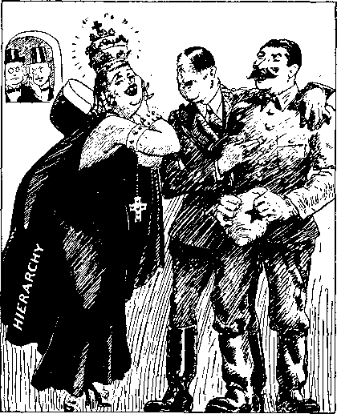
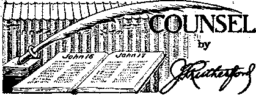
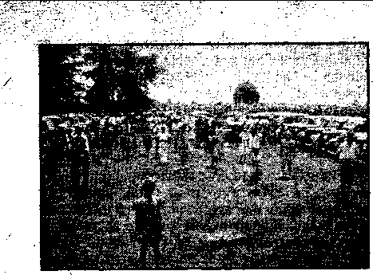
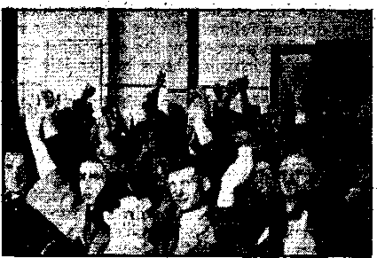
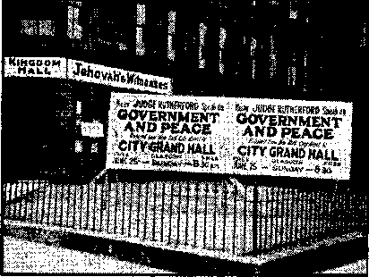
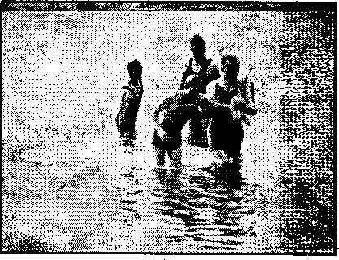

/• '■ ;3&',
, A Critical Review of Mein Kampf Not Mere Lunacy, but Demonization The Timid Sponsors
The Results of Catholic Tutelage
Excuse for Wrecking Protestantism
Railroads ,
: Palestine
Let America Mind Its Own Business
Justice in Pennsylvania :
' U. 8. A. Judiciary ■
Man ton’s Mill for Selling Justice
Counsel by J. F. Rutherford
■ Hope for the.J'Cw
<■’ Public Utilities
f In the “Rockies” of the U. S. A.
• ? The-New Government
Object Lesson for God’s Opposers
' ■ Russia
■- Science
. ' ■ Protestantism
7 An Ideal Candidat#
British Comment
Contrasts
Great Efforts and Great Problems
Evacuation ■
All Europe on the Trek
Dreams of a Dean
Natural Phenomena
3
5
7
9
9
11
12
13
14
16
16
20
35
20
27
. 28
28
28
29
30
31
Published every other Wednesday by WATCHTOWER BIBLE AND TRACT SOCIETY, INO.
117 Adams Bt„ Brooklyn, N. Y„ U, S. A.
Editor Clayton J. Woodworth
Business Manager Nathan H. Knorr
Rive Cents a Copy
11 a year In the United States
SUS to Canada and all other countries
NOTICE TO SUBSCRIBERS
Remtttanessi For your own safety, remit by postal or express money order. When coin or ourreney is lost In the ordinary malls, there Is no redress. Remittances from countries other than those named below may be made to the Brooklyn office, but only by Intern at Iona I postal money order.
Receipt of a new or renewal subscription will ba Acknowledged only when requested. Notice of Expiration Is sent with ths journal one month before subscription expires. Please renew promptly to avoid loss of copies. Send change of address direct to us rather than to the post office. Your request should reach us at least tw0 weeks before the date of Issue with which It Is to take effect. Send your old as well as the new address. Copies will not be forwarded by the post office to your now address unless extra postage Is provided by you.
Published also in Afrikaans, Bohemian, Danish, Dutch, Finnish, French, German, Greek, Hungarian, Japa-’ nese, Norwegian, Polish, Portuguese, Spanish, Swedish, Ukrainian; also special Australian edition in English.
OFFICES FOR OTHER COUNTRIES
England 34 Craven Terrace, London, W. 2
Canada 40 Irwin Avenue, Toronto B, Ontario Australia 7 Beresford Road, Strathfield, N.S.TV. South Africa 623 Boston House, Cape Town
Entered as second-class matter at Brooklyn, N< Under the Act of march 3, 1373.
Th* Men end the Hat*
Those things called “hats”'tW S'ladies wear are enough to ttbjiW?
men swear. It’s not the cost—let’s t get it straight—that makes the--male heart palpitate and strangers
stop and stare and gawk at every female on the walk. It’s not the color that they wear in those contraptions on their hair; nor how they tie them on with bows, anchored safely while it blows, that causes men to rant and weep when’er they venture down the street.
Nor does the ordinary man observe the mil- a finery- plan enough to know what is in style .When hats parade along the aisle. To him the wearing of a wimple is only to adorn a dimple; and whether black or green or pink, or trimmed with tools from the kitchen sink, a _
woman’s hat is a work of art, to which there ■
is no counterpart. -
And what she pins upon her hat, or whether this or whether that, few men would dare to be so bold as to criticize or scold. Let 'em wear
upon their crowns things that make ’em look like clowns. Who is man, to tell a maid that her hat looks like a spade? Why should he . object to feathers, vegetables, fruits or leath-erst It isn’t what she wears, or why, but it’s those shapes that make us cry!
But when we stop to contemplate how very strange and out of date a dame would be unless her pate was topped with such a hod or crate, we must admit they know what’s cute —that’s why we chorus, “She’s a beaut I”— Spo/testnan Review. * - .
Helpl
A gallant_young husband was trying to teach his new and nervous wife to drive a ear.
They were on a narrow country road and the wife had been driving for only a short time when she exclaimed:
“Take the wheel quickly, darling—here comes a tree!”—Labor. ..
Eau Seau?
There was a young lady named Fleau,
She had a good-looking beau.
Said Fleau to her beau, Let us geau to a sheau.
Said her beau, If you’ll bleau, Fleau, I’ll geau.
, “And in His name shall the nations hope.”—Matthew 12:21, A. R.V.
Volume XX) Brooklyn, N, ¥,t Wednesday, November 29, 1939 Number 527
A Critical Review of “Mein Kampf”
ATTENTION is here drawn to an edition of Mein Kampf copyrighted 1939 by Houghton, Mifflin & Co., bearing the warning,
"AU rights reserved, including the
right to reproduce this hook or parte thereof in . any form. Copyright 1925 by Verlag Frz, Eher . Nachf, G.M-G.H.; copyright 1927 by Veriag Frz. Eher Nachf, G.M.G.H.; this edition is published by arrangement with Houghton Mifflin Company, Boston, Mass.” “Adolf Hitler, Mein Kampf, complete and unabridged, fully annotated; editorial sponsors: John Chamberlain, Sidney B. Fay, John Gunther, Carlton J. H. Hayes, Graham Hutton, Alvin Johnson, William F. Sanger, Walter Mills, Raoul de Roussy de Sales, George N. Shuster; Reynaf E. Hiteheoek, 1939, New York.” “The fol, lowing individuals as a committee sponsor the publication of this annotated and unexpurgated edition of Mein Kampf: Pearl Buck, Dorothy Canfield, Edna St. Vincent Millay, Ida Tarbell, Cyrus Adler, Charles A. Beard, Nicholas Murray Butler, Theodore Dreiser, Albert Einstein, Morris Ernst, Rqv. Harry Emerson Fosdiek, Rev. John Haynes Holmes, James M. Landis, Thomas Mann, Bishop William T. Manning, Eugene O’Niel, Theodore Roosevelt, Jr., Monsignor John A. Ryan, Norman Thomas, Walter White, William Allen . White, Rabbi Stephen S. Wise.”
’ It is no doubt due to the presence on the * sponsor’s committee of a monsignor and several reverends that the real world significance of Nazism as set out in Mein Kampf is go sadly neglected in the annotations supplied by the editorial sponsors, and while the editorial sponsors no doubt labored to produce a reliable set of complementary notes in the efforts to unmask or refute Hitler, the real power behind him and the Nazis remains unchallenged and untouched.
The whole intent and self-confessed motive behind this translation is one of attack against a devilish system now endangering the entire civilization of this globe. This motive is inspired by a desire to arm the opponents of NOVEMBER 29, 1939
Nazism by placing in their hands categorical information calculated to defeat the Nazi idea in this country'. If they have failed to do this, then the book remains an effort not only of doubtful value, but one that can place in the hands of unscrupulous men the tools wherewith to destroy democracy.
That they have failed to touch or expose the one force 'hat enables Hitler to destroy democracy in other lands in favor of the totalitarian idea is the pathetic truth that promises well for Hitler and his cause. It must be concluded that fear and a childish haste to accept newspaper reports of questionable value thus cheats a waiting nation of its righteous cause. That this expose would shock the religious susceptibilities of some is no excuse, and the committee has refused to investigate plain and easily proved clues to the reason for the power of the Nazis in countries other than Germany.
The facts brought to light in the events surrounding the destruction of Czechoslovakia, and the grabbing of Austria, plainly indicate that within the boundaries of every country Hitler has a nucleus of Nazi-minded men who labor unceasingly in his interest. That nucleus is a political-religious organization of world-wide dimensions and is known as the Roman Catholic Church and its dupes/
Had these editorial sponsors been true to their professed ideal of sounding the alarm against a foreign foe, whose avowed aim is the destruction of democracy, they would have uncovered the fact of Roman 'Catholic dominance in Germany; the destruction of a republican government in Spain, at the pope’s behest, and with the aid of his strong-arm squad under Mussolini and Hitler; the part Catholic priests played in the dismemberment of Czechoslovakia; the blessing of the pope on ' Mussolini’s Ethiopian, rapacity; the betrayal of Austria by the pope and Hierarchy by the person' of Cardinal Innitzer; the Fascistic ranting and Jew-baiting of Charles Coughlin; the Fascistic regime of Cardinal Villeneuve in Quebec; and the whole train of underground conspiracy now easily discernible in every nation on earth.
Had they been true to their task, they would have warned the nation that every Catholic church is a hotbed of the totalitarian idea, that, by lies, prejudice and fear, these churches have brought their people to a unit in support of such an idea; that this foreign power either controls Hitler or he controls it ; and that it is the duty of every true American to set his face against Catholic dominance in America.
Inconsistently, the editorial eom-mittee carefully traces Hitler’s K early beginnings and endeavors to discover the kind of fare that made bI his warped mentality what it is, and ignores the most important clue of all; to wit, Hitler’s youth as a Roman Catholic, his study of politics in Roman Catholic Austria, and the very Roman Catholic nature of his aims, ideals and actions to which he abundantly testifies in his book.
That he is a Roman Catholic of unimpeachable tutelage is proved by the perfect accord between his ideas and the political dogmas of the Vatican. For instance, the Vatican, as the author of the “’divine right of kings”, is really opposed to democracy, if only for the reason that the Catholic church cannot become the
state church in nations that have democracy. Hitler is fanatical on the ‘divinity of rulers’ and hates democracy with equal fervor.
The works of Hitler speak louder than the smoke-screen used to conceal his position as the head of the new Catholic Inquisition in Germany. As examples, the destruction of the Protestant church as a unit in Germany and his signing of a Concordat with Pacedi (and no one ever heard of that church’s signing such a document unless she gained a distinct advantage from it) arc glaring truths, together with the fact that before Hitler’s rise to power the Protestants and Catholics were fomenting a little religious war of their own, and that Hitler took the side of Catholicism as against Protestantism, are truths of deep and unarguable implications.
That these sponsors could have uncovered such things as would guard against Papalizing America seems to be proved by the appraisal of Mein Kampf by Dorothy Thompson, inserted as a foreword in the book. She goes so far as to say that Hitler is “completely mediaeval”, but neglects to add that the medieval is strictly Catholic, and that Catholicism is still strictly medieval. She further confuses herself and readers by referring to Hitler as a renegade Catholic because he rejects that church’s professed doctrine of Universality. Dorothy deplores Hitler’s ignoring of history, but here she is guilty herself, since even a cursory glance through Wells’ Outline of History could.convince her that this professed doctrine of Universality has always been conditioned on political expediency and power politics. Such a doctrine, though professed, has never been adhered to by the popes and Hierarchy, and was used only to deceive in. y moments when it could be most useful. Peace, has never been the desire of the “Church”, but unrest and wars are the bulwarks of her power. A degraded human race can be ruled; a peaceful thinking one never accepts domi-. nance from the priesthood.
The following quotations from the body of the text, and also from the annotations, will indicate by complementary facts that the Hierarchy is indeed the nucleus of Nazism and Fascism, and that the esteemed editorial sponsors have turned traitor to their professed duty and have betrayed their country and their fellow men. In examining these notes it should be remembered that Mein Kampf was written before Hitler’s rise to power, and illustrates the mental conclusions he had reached as to his future course.
(1) The boy Hitler, a serious Catholic, acknowledges his debt to the church in regard to Jews.
It was only when J was fourteen or fifteen that I came upon the word Jew more frequently, partly in connection with political discussions. I felt a slight dislike and could not ward off a disagreeable sensation which seized me whenever qonfessional differences took place in my presence. [Page 40]
(2) It was the Roman Catholic von Papen that paved the way for Hitler’s rise to power.
But with Hindenburg’s re-election in 1931 the prestige of the Nazi party began to fade, only to be revived again when Chancellor Bruening was
dismissed and the government entrusted to Frans von Papen against the will of the Reichstag, Papen thereupon systematically undermined the Republic, so.that it was virtually defenseless when in 1933 Hitler was entrusted with the government. Had it not been for this sudden change in the German leadership, Hitler might eventually have been compelled to seek a status as a normal political leader and try his hand at the [Page 131, footnote]
(3) That Jew-bait-’ ing is a Catholic dogma history can accurately demonstrate, aiid that she concurs in Hitler’s Jewish persecution is proved by her Concordat with him, in comparison with the P rotes-- taht church’s refusal to concur in such medievalism.
Thus Protestantism will always interest itself in the promotion of all things German as such, wherever it is a matter of inner purity or increasing national sentiment, the defense of German life, the German language and German liberty, as all this is also rooted firmly in Protestantism; but it will immediately and sharply fight every attempt at saving the nation from the grip of
parliamentarian game.
A crown-jewei-colleetor from the Kremlin meets a new prospect
its most deadly enemy, as its attitude towards Judaism is fixed more or less by dogma, [Page 145]
That Hitler is demonized can be demonstrated, although Dorothy Thompson confines her comments to charges of just plain lunacy. She calls him “queer”. Yes! He is
cdoirig God’s will’, is god, too, and writes his scriptures with the same banality and hallucination characteristic of another god-person, Mary Baker Eddy, in her “Key to the Scriptures”.
- In this respect let us consider the meaning of the word “Fuehrer” set out in a footnote on page 1.1.7.
The Fuehrer is-a man who gives expression to the divinity -that is enshrined in his people, a NOVEMBER 29, 1933
“Traumlaller” (one who speaks oracularly in his dreams) is George Schott’s phrase. Gottfried Feder, author of the party program, onee described the Fuehrer as follows:
He must have a somnambulist’s feeling of certainty in the pursuit of his goal: he must not shrink from bloodshed or even war.
Addressing Nazi confreres, he has frequently stressed his ability to wait until what is in the folk soul dictates the course he is to pursue. He said:
I believe I am today acting in the service of the Almighty Creator, By warding off the Jews, I am fighting for the Lord’s work.
This demonization of a man and a whole nation is not contradictory to Papal policy, as history can show a continued labor of diabolical conspiracies, murders, inquisitions and betrayals down through the centuries on the part of the Papacy, That Hitler believes he is a Messiah is characteristic of the Catholic doctrine of the “divine right of kings”. It might be recalled that the Jesuits so corrupted Louis XIV in this respect that he considered as his due
the title “Son of the Universe”.
That Hitler early in his career arrived at the point where he deemed it wise and expedient to wed his cause to Roman Catholic ambitions is testified to in the following (pages 147-149):
There is one question which the pan-German movement in Austria ought to have asked itself. Is the preservation of the German nation in Austria possible under a Catholic faith? If it is possible, then the political party had no right to occupy itself with religious or even denominational affairs; if not, however, then a religious reformation had to set in, and not a political party. He who believes he may arrive at a religious reformartion by the round-about way of political organization only shows that he really has not the slightest ' 5
idea of the way in which religious concept ions or even dogmas originate and their effect oti the ehurch, Here one really cannot serve two masters. In this, I consider the foundation or destruction of a religion essentially more important than the for-matioji or destruction of a state, let alone a party.
(4) The footnote to this material is misleading and seems to draw attention away from the fact that Hitler’s excuse for demolishing Protestantism, was because it failed to acquiesce, as the Papacy did, in Jew-baiting, but proves that Ludendorff had a good slant on the matter.
These words seem to define Hitler’s point of view at the time this book was written, and dogbtless reflect the situation in which he found himself in Bavaria of 1 923. The statements hare made aroused General Ludendorff, already then a violent opponent of Rome and the Jesuits, and were dealt with in a magazine article in which the General accused Hitler of having “sold out” to Rome. The Fuehrer was at the time uncertain of what the future might bring, and is known to have Interviewed leaders of the Bavarian People’s Party (Catholic) concerning the terms tinder which he might be admitted to that organization. Heiden puts the matter somewhat. differently, suggesting that Hitler had merely been trying to get permission to reorganize the party. In addition, one of the best friends the Nazis had in the Bavarian regular army was General Franz von Epp, a Catholic who would have frowned on anything smacking of religious warfare.
Perhaps- it is not possible as yet to substantiate the statement in full—, the change in Hitler’s personal attitude is attribiftable primarily to the conversion of Cardinal Faulhaber, archbishop of Munich, from Monarchist Rcforma-tionism to Democracy and Pacifism. The Cardinal proclaimed this new attitude in a sensational open letter which implied criticism of the Nazis. In addition Hitler had come more under the influence of Alfred Rosenberg, whose ideas on racialism and religion have since been standard party fare. At any rate the Catholic Church took up in earnest the fight against the Nazi creed after the triumphal elections of 1930. A number of pastoral letters denounced the errors contained in the party’s program and in the books of important leaders; and late in 1930 the Ordinary of the diocese of Mayence refused to grant Catholic burial to a Nazi. After Hitler came to power all this was changed. The Bishops revised their attitude: a Concordat was signed with the Holy See. Even more recently some Catholic, leaders have professed to believe that a Modus Vivendi with Hitler might be reached.
We possess authentic records of Chancellor Hit-
6
■ ■■■ '■■" ' c ■?. LT
ler’a private views of the religious situation. One of these map be cited in part: Hitler said nonce ruing Catholic opposition, especially in Bavaria, that its fomentors were wasting their time; they might as well stop pipe-dreaming; he would not follow the. example of Bismarck; he was a Catholic, Providence had arranged that. Bismarck had failed because he had been a Protestant, and Protestants have no conception of what the Catholic church is. The important thing was to sense what people felt in religious matters and what endeared the church to them. If the clerical caste would not disappear voluntarily he would direct propaganda against the church until people would be unable to hide their disgust when the church was mentioned. Why, it was only necessary to make church history popular, He would have films made. Looking at them the German people would see how the clergy had exploited them, lived off them; how they had sucked the money out of the country; how they had worked hand in glove .with the Jews; how they had practiced immoral vice; how they bad spread lies. These films would be so interesting that everybody would itch to see them. He would make the clergy ridiculous. He would expose all the tangled mass Of corruption, selfishness and deceit of which they had been guilty. He would make the bourgeoisie tear their hair. He would have the youth and the people on his side. He would guarantee that if he set his mind to it he could destroy the ehurch in a few years. The whole institution was just a hollow shell. One good kick and it would tumble together in a heap. [Pages 145-148]
(5) As a further strain on the gullible, Hitler goes on in praise of the Hierarchy one page farther on.
But also in another direction it would be unjust to make religion as such or even the Church responsible for the mistakes of various individuals. One should compare the visible greatness of the organization which one has before oneself with the average faultiness of men in general, and one will have to admit that the proportion between good arid bad is here perhaps better than anywhere else. Even among the priests there are certainly such to whom their sacred office is only the instrument for , the gratification of their political ambition, and who, in the political fight, forget in a more than deplorable manner that they should be the guardians of a higher truth and not the promoters of lies , and calumnies, but such an unworthy individual is outweighed on the other hand, by a thousand more honest pastors, most faithfully devoted to their mission, who stand out like little islands in a communal swamp in our mendacious and detnoral-' ized time. [Page 149]
(6) Hitler realized the futility of trying to fight Rome while building up a political machine, but sees use for it in that structure.
Says he of an Austrian party which mixed Jew-baiting and anti-clericalism:
The practical result of the Austrian Kultur-kainpf was equal to nil. However one succeeded in tearing away from the church almost one hundred thousand members, but shp did not suffer any particular loss because of this. She really did not have to shed any tears for the lost Iambs, for the Church lost only what for a long time had not fully belonged to her internally. This was the difference between the new reformation and the old one: that once many of the best of the church turned away from it because of their inner religious conviction, while now only those went who were not only lukewarm, but for a consideration of a political nature. But even from the political point of view, the result was just as ridiculous and yet again saddening. Once more a political movement promising success and salvation to the German nation had perished because it had not been led with the necessary ruthless sobriety, and lost itself in directions that - were bound to lead to disunion. [Page 151]
(7) The Jesuits no doubt joined r his Jew-baiting and were
■ delighted to find a means of elimi-
nating Jews rather than baptizing them as was done in the glorious days of the Inquisition. (Quote from footnote)
Traditional anti-Semitism had in Germany always been based on confessional differences. Any other motivation was forbidden by the ehurch; and in all pogroms of the Middle Ages Jews were able to escape the rigor of persecution by accepting baptism. Surprisingly few availed themselves of that-opportunity; and on the Christian side Saint Bernard had pointed out that the worst possible ■ way to attempt conversions was to inflict torture and death on the recalcitrant. Therefore, racial anti-Semitism as an integral part of a program of a political action remains Hitler's Copernican dis-
t ■ covery; for now there is no escape for the victim —no escape even for his Jewish grandmother, by -------of whom he is a pariah under the Nazi laws.
reason
[Page 155]
(8) Hitler’s recognition of the Roman Hierarchy as an aid and abettor of his political aims is confessed where he recognizes that a weakening of the authority of the church by an attack on her dogmas is a weakening of her usefulness as an ally, and rejects it. Jehovah’s witnesses and all true Protestants will understand the implications of this passage.
Remarkable also is the more violent fight begun against the dogmatic fundamentals of the various churches, without which, however, the practical existence of a religious faith is unthinkable in this world of man. The great masses of a people do not
NOVEMBER 1930 consist of philosophers, and it is just for them that faith is frequently the sole basis of a moral view of life. The various substitutes have not proved so useful in their success that one would be able to see in them a useful exchange for the former religious creeds. But if religious doctrine and faith are really meant to seize the great masses, then the absolute authority of the contents of this faith is the basis of alt effectiveness. What, then, the customary style of living is for general life, without which certainly hundreds of thousands of well-bred people would live sensibly and wisely, but millions of others certainly would not, the organic laws are for the State and dogma is for religion. Only by this is the wavering and infinitely interpretable, purely spiritual idea definitely limited and brought into a shape without which it could never become faith. In the other case, the idea would never grow beyond a metaphysical conception; in short, beyond a philosophical opinion. The attack upon the dogma in itself resembles, therefore, very strongly also the fight against the general legal fundamentals of the State, and just as the latter would find its end in a complete anarchy of the state, thus the other is a worthless religious nihilism. | Pages 365-366]
(9) The above is certainly not anti-Catho-lic. Even the editorial sponsors could see it, but frittered the whole away in the following footnote:
This is the reverse of “Religion is the opium of the people.” Rauschning (ef. his Revolution des Nihilismuti) has pointed out Hitler’s deep respect for the Catholic Church, and in particular for the Society of Jesus. In this he resembles Auguste Comte, who once proposed a liaison between Positivism and Rome. Both sundered their admiration from any kind of belief. Hitler praises the ability (as he sees it) of the church to keep on resolutely proclaiming an article, of faith, however powerful the arguments arrayed against it may be. If the nation can build dogmas about its new “myth” and propagate them as stubbornly, it may (so it is thought) give Germany a new faith, which the masses will cherish as tenaciously as they have until lately cherished Christianity. [Page 365]
(10) Although the trail is now getting hot, the editorial sponsors keep eool, nor give way to emotion as they insert this footnote on page 371, quoted in part:
It was the annexation of Austria that first tipped the scales in Hitler’s favor. Almost immediately there appeared in various parts of the diplomatic world a ‘memorandum’ purporting to be a plan for a ‘Catholic group’ of states in Central Europe, running from Italy through Croatia and Hungary to Slovakia and Poland.
It is a pity we are not told who circulated
7 the memorandum, but further on it says that tjie swastika became a popular symbol among the peasants of Slovakia and Hungary,
Who Financed Hitler?
rAdiS&k' (H) After seeing Hitler a • staunch supporter of the Papacy,
and dead set against what he calls religious nihilism, £..d footnoting ■> that Hitler and the Papacy are in
a Concordat, the next step was to make a guess as to what source Hitler’s financial aid came from. But, of course, that would better remain a mystery. Certainly the organization that has for centuries swindled the human race out of their gold and silver would not have a cent to give to a demonized eunuch who would seat her in power and destroy her enemies.
Therewith the question as to how the Nazi party was financed had been raised, hut no satisfactory answer has ever been given. During its early years, funds were obtained from Munich friends, from the Reichwehr and probably from White Russians, who had access to foreign money. Whence came the stream of gold that poured through White Russian fingers is indeed one of the unsolved mysteries of post-war history. [Footnote]
(12) It was time for the editorial sponsors to be watchful, because the facts were slowly emerging, but instead they inserted at this place a footnote, a statement in regard to confessional schools. But first we will quote from Hitler himself:
Here the Catholic church can be looked upon as a model example. In the celibacy of its priests roots the compulsion to draw the future generation of the clergy, instead of from its own ranks, again and again from the broad masses of the people. But this particular significance of celibacy is not recognized by most people. It is the origin of the incredibly vigorous power that inhabits this age-old institution. This gigantic host of clerical dignitaries, by uninterruptedly supplementing itself from the lowest layers of the nations, preserves not only its distinctive bond with the peoples’ world of sentiment, but it also assures itself of a sum of energy and active force which in such a form will forever be present only in the broad masses of the people. From this results the astounding youthfulness of this giant organism and its steel-like power, [Pages 043-644]
Of course, that mysterious bond between the Catholic church and the masses could not be a result of knowing everybody’s business through the confessional! Or because the Catholic church shaped the mind and temper of the victim! '
Admiration of the Religious Racket ‘
(13) Once more Hitler cannot eontpol hi^ admiration for'“purgatories”, candles, masses, etc., nor can he escape the conclusion that the church has a glorious future before it, and gives off as follows:
Here, too, one can learn from the Catholic Church. Although its structure of doctrines collides in many instances quite unnecessarily with exact science and research, yet it is unwilling to sacrifice even one little syllable of its dogmas. It has rightly recognized that its resistibility does not lie in a more or less great adjustment to the scientific results of the moment, which in reality are always changing, but rather in a strict adherence to the dogmas once laid down which alone give the entire structure the character of creed. Today, therefore, the Catholic Church stands firmer than evep. One can prophesy that in the same measure in which the appearances flee, the church itself, as the voting pole in the flight of appearances, will give more and more blind adherence. [Page 682] .
(14) Hitler’s articles of faith or political program cannot be gone into, but one ;point catches the eye, in article 19:
Roman law must be abrogated and replaced by ‘ German law. [Page 690]
Here ws a wonderful opportunity for facts and analysis. The editorial sponsors flopped again. The facts will show that what really has taken place is, the abrogation of German law and its replacement by Papal laws. These might be indicated as below:
(a) The resurrection of the old Papal laws in restraint of the Jew—reinstitution of the ghetto, peculiar dress and systematic robbery.
(b) Destruction of freedom of speech, press and assembly as in the days of Torqnemada and the Duke of Alva, in harmony with Papa) encyclicals on such freedom,
(c) Doctrine of divine right of rulers, including Hitler, of course, ip ven ted by the Hierarchy so she could have an excuse, as representing divinity, to do the crowning. ,
(d) Throttling of Protestantism even as in the days of Charles V and Luther. ;
(e) Courts modeled on old Inquisitional forms, where the prisoners’ defense counsel is only a formalism, and where the accused testifies against himself and is judged without appeal, '
(f) Merciless torture of “heretics” and “Jews”; among the former1, Niemoeller and Jehovah’s, witnesses ...... ;
(g) Gestapo, modern refinement on spies; of : Inquisition, who listened for the damning words from the unsuspecting. ?
Ch) Death of every democratic principle inimical to the Catholic church’s eventual despotism.::
(15) Hitler now reveals the depths to which his Catholic tutelage has led him. He discovers that night is the best time for the dirty work of converting and inciting
men to deeds of violence, injustice and crime. It seems that in the morning, and even during the day, men’s will power revolts with highest energy against an attempt at being forced under another’s will and another’s opinion. In the evening, however, they succumb more easily to the dominating force of a stronger will. For truly every such meeting presents a wrestling match between two opposed forces. The superior oratorical talent of a domineering apostolic nature will now succeed more easily in winning for the new will people who themselves have in turn experienced a weakening of their force of resistance in the most natural way, than people who still have full command of the energies of their minds and their will power. The same purpose serves also the artificially created and yet mysterious dusk of the Catholic churches, the burning candles, incense, censers, ete. [Pages 710-711]
You.see he should have been a priest.
(16) A footnote on page 143 shows how Hitler has corrupted Lutheran Protestantism.
Lutheran teaching on the subject of baptism, which is regarded as the greatest sacrament, is that through baptism equality of status before God and in the church is conferred on man. Differences of race and environment may and do subsist, but they are not of essential importance. Moreover, the sacred ministry is open to all who have been baptized and are called. Therewith Lutheranism denies the priority of race. When Hitler came to power he immediately tried to place the governance of the Lutheran church in the hands of men who were willing to alter the traditional teaching. A targe group of German Christians who subscribed to Hitler’s views were recruited and their representative, Pastor Ludwig Mueller, was named archbishop at the command of the government. The majority of German theologians refused, however, to accept so drastic a tampering with their creed. Gradually they formed the Confessional Synod, and this has until now, despite all pressure and suffering, clung resolutely to the orthodox point of view. The best-known spokesman for this point of view is Pastor Martin Niemoeller, who was imprisoned by command of Hitler and is still held in virtually solitary confinement, but there are hundreds of clergymen who. have learned, too, the meaning of opposition. More than twelve hundred of their number have gone to prison; some are dead. The crisis through which-Lutheranism is passing is unquestionably the gravest in history. .
NOVEMBER 29, 1939
That he thus found a good excuse to wreek Protestantism and favor Catholicism can be demonstrated. His surrender to the Catholic Chureh was symbolized, one may say, by his efforts to appease and control the Bavarian People’s Party (Roman Catholic). Proof of this adherence to Catholicism before his rise to power, at which later time he debauched Lutheranism, is found in the following footnote, but, of course, the editorial sponsors were really snoring when they wrote it, and so they failed to draw any conclusions.
The ultramontane1 question was raised by Ludendorff. After Hitler’s release from prison, he saw that without the tacit consent of the Bavarian People’s Party any resumption of his activities in Bavaria was out of the question. Therefore, he publicly disavowed any interest in religious warfare, though other Nazis might keep up a fairly steady fire on the chureh from behind their desks in the Voelkischer Beobaehter offices. Besides, Mussolini had reached a kind of armistice with the Catholic church (though real peace" did not come until 1929) the dramatic value of which made itself felt even north of the Alps. Ludendorff, whose second wife had instilled into him a loathing for the Jesuits in particular, received this profession of religious neutrality, even of benevolence to religion, if one prefers, with unconcealed antipathy. North German writers, Count Reventlow in particular, also took exception to Hitler’s stand. No sooner had the party come to power, however, than essays to which Ludendorff might have subscribed with gusto appeared on all kiosks. The preface to a brochure concerning the Jesuit, by Herbert Herrmanns, said in part:
This essay makes no pretense at being objective, since that would mean merely adding another to the enormously swollen tide of books and writings of that kind. It is offered, rather, as a clear-cut attack. Potsdam in the May moon of the first year of the National Socialist Revolution. Page 823.
You perceive, then, how easy it is for the editorial sponsors to get off the subject and wind up with an insinuation that Hitler was anti-Catholie, and that the criticism of Jesuits by Ludendorff was inspired by a woman, and —one cannot escape the thought—a questionable one. And now Hitler reveals that Protestants dare not be Protestants, that is, protest against anything:
For example, in all these three countries a struggle against clericalism or Ultramontanism can be -preached without running the risk that through this attempt the French,' Spanish or Italian nation as such will fall apart. But this may not be done in Germany, since here Protestantism, too, of course, would join in such an initiative. Consequently, however, the defense, which elsewhere would be solely by Catholics against political encroachments of their own prelates, would here immediately take on the nature of an attack by Protestantism against Catholicism. [Page 828] .
You see that would not do: the Catholic Church cannot take it, and so she must be protected. It is no doubt passages such as these that endeared Hitler to the Vatican. And then, after taking sides against Protestants, and perceiving the refusal of Lutheranism to join him in Jewish blood-letting, because of conscience, he has the gall to lie about it and say,
The most believing Protestant could stand in the ranks of our movement, next to the most believing Catholic, without ever having to come into slightest conflict of conscience with his religious convictions. [Page 829]
That is how Rome uses her natural enemies to overcome one another—divide and rule. By now it should be plain to the reader that, had one of those Jesuits so beloved of Hitler set out to debauch the German race, he would have chosen the identical methods resorted to by the madman of Berchtesgaden.
It may be said that, in a greater sense, the Catholicism and orthodoxy of Adolf Hitler displays itself most abundantly" in his hatred of democracy, and Mein Kampf is the most colossal tirade against democratic institutions that has ever been written. Tn this he is now ably supported (since he can no longer rave against Marxism in Germany) by the Roman Catholic clergy, in every country on earth, by their pot-shooting and ambushing of every free, liberal and democratic institution.
It is hardly" necessary to point out that since the New Deal has been sworn to be the political expression of the late pope’s encyclicals, the resulting circumscribing of freedom, and demoralization of the masses, is a natural consequence. It might be remarked in passing that the United States and Great Britain have never been subjected to so great a barrage of meddling, criticizing, and greed for power on the part of the Roman Catholic Hierarchy as afflicts them now; and since these matters dare not be openly presented to the public, either by press or radio, the prospect that thet church of Rome and Hitler will realize their ambition to rule the world is very good indeed.
To return to the sponsors: It is regrettable that they failed to see in Hitler’s destruction of labor unions, in his destruction of free-■ /hGL dom of conscience, press and speech, in his medieval brutality and my7stieism, in his merciless persecution of innocent men and women and children, in his bloody intolerance of any faith not Roman, in his trances and tremors, the pure, unadulterated and devoted champion of the Hierarchy, using the “Church”, and being used by her, to regain for her the lost power and prestige of the Dark Ages,
It is too much, of course, to expect these sponsors of great reputation to see or understand the signs of the times; since in an earlier day an zXugustus Caesar did not understand his time, nor the great and noble Pontius Pilate. And for that reason the following footnote can scarcely be held against them, although their attempt to pose Hitler as a persecutor of Catholics, and their willful and cruel ignoring of the terrible plight of Jehovah's witnesses in Germany, will some day be counted against them by Him who sees all. Quoting from page 247:
The nationalization of the great masses can never take place by way of half measures, by a weak emphasis upon a so-called objective viewpoint, but by a ruthless and fanatically" one-sided orientation as to the goal to be aimed at. That means, therefore, one cannot make a people “national” in the meaning of our present “bourgeoisie”, that is, with so-and-so restrictions, but only nationalistic with the entire vehemence which is harbored in the extreme.
The footnote to this statement follows, and further illustrates the helplessness of the worldly-wise in the face of the greatest calamity of all time about to befall humankind, just as Christ Jesus foretold.
This hysteria was an important discovery. It was created by a kind of hypnotic influence, seemingly exerted by the Party assemblies on the people undoubtedly not wholly normal as a result of privations through which they had passed. Extraordinary phenomena of a similar kind were numerous during the post-war years, e.g,, the curious ' "healer" of Hamburg, Haeuser, who was followed by immense crowds; the Bibelforscher (Bible Students) who raised tides of ad vent is tic emotion in Silesia and elsewhere; Rudolph Steiner, the anthropologist, who built houses resembling trees, etc. Those who heard Hitler during those years are unanimous in saying that he engendered a kind of emotional trance with methods quite his own. Party guards moved continuously around the place of assembly, and usually some interloper was found who could be dramatically shaken and bounced. Then there was a pause. Had anything gone wrong? Then Hitler appeared, looking as if he had run the final two hundred yards in record time, to, unleash a torrent of words, working himself into a frenzy of half-somnambulistic energy that lasted for hours, and reveling in climaxes that were ; more like motifs in Wagnerian drama than like any kind of discourse. Perhaps he would suddenly break into a sort of weeping, pause, and shout ‘'Deutschland, Deutschland, Deutschland”. However the foreigner might react, even quite normal Ger' mans were swept off their feet. Hitler’s very ex-f tremes had effected an emotional release. Then his oratory wrung every listener dry, provided, that is, that he could bring himself to be en rapport with what was said.
This self-evident demonization of entire masses of people could not possibly be noticed by the sponsors, nor by the learned editorial committee.
To conclude (and space and time forbid the analysis the book demands), Mein Kampf is a handbook for all the Totalitarian-minded, in whatever country or state they be. Having once read it, it is not hard to divine the significance of much of the hogwash published ip daily papers, books and magazines; nor can one thereafter fail to mark the men who by their utterances and public speeches testify that they have learned the diabolical lessons it has to teach, and are endeavoring to put inpractice those same lessons, hoping thereby to gain an end entirely selfish and despicable: an end that will prove unutterably tragic for the human race. And to this end the sponsors have contributed their share.—Jos. E. Bolden, Pennsylvania.
Philip Davis, New York lawyer, sued the New York Central Railroad Company because, after it had sold him a ticket to Albany, for the sum of $2.80, he had to stand for
the three-hour ride between the two cities. He won his fight and received $962.89 in eash, the same being a return of the cost of his ticket and legal costs and interest on the same to the day of settlement. A ticket calls for a seat, and if a railroad company sells the ticket, and a coach is overcrowded, it is its business to see that the passenger is accommodated in a Pullman if there is any space available in such ears. >
♦ Aluminum cars introduced in the subways of New York weigh only half as much as steel, cause less wear and tear on rails, reduce the noise, and are popular.
♦ Complaint ■ comes from Costa Rica that buses are killing the railroads. The same situation is developing all over the world.
NOVEMBER 29, 1939
♦ Two highwaymen in Wisconsin, one 3 years of age and the other 4, stood between the rails of the Chicago and Northwestern Railway at Crandon, Wisconsin, and brought a train to a screeching standstill ten feet away. They had a toy gun with them with which they figuratively shot the fireman who came to put them off the track. And in the end the only reward of their holdup was that they got spanked by their mother. As a matter or fact, however, it was the father and mother that deserved the punishment. It was they that placed the weapons in the babies’ hands.
♦ A new streamlined train 1 etween Berlin and Hamburg made -the record time of 134 miles an hour. The locomotive is Diesel-driven. A record of 125 miles an hour has been made in Britain, on the London and Northeastern Railway, between London and Edinburgh.
♦ A new train makes the 57.7 mile run between Brussels and Bruges, Belgium, in 46 minutes, or at the rate of 75.3 miles per hour, start-to-stop,
Britain’s Pipe Line
A tremendous pipe line carrying oil from Kirkuk in Iraq to the coastal cities of Haifa and Tripoli is of considerable importance to the British and their navy. Like the well-known British life line, it runs through Arab territory. Hence Britain’s desire to keep peace with the Arabs, even at the seeming expense of the Jews in Palestine. Both the Arabs and the Jews have rights of long standing in that ancient country, but the Arabs have the "important “nine points” of possession. Judge Rutherford, in his study of the prophecies, has stated that never again will the Jews gain possession of Palestine. And it is beginning to look like it in actual fact. Jew religionists continue to reject Messiah. They can hardly look for Jehovah’s favor, as long as they continue in that course.
♦ For some time Jewish farmers in Palestine suffered from strange fires in their standing grain, until finally a policeman caught an Arab, lurking near a field, carrying in a bag five oil-soaked rats. He had been following the practice of lighting the poor creatures and then setting them adrift to burn the crops of those he regarded as his enemies. This affords an interesting contrast to the following account found in the Holy Scriptures:
And Samson'went and [took in snares] three hundred foxes, and took firebrands and turned tail to tail, and put a firebrand in the midst between two tails. And when he had set the brands on fire, he let them go into the standing corn of the Philistines, and burnt up both the shocks, and also the standing eorn, with the vineyards and olives.— Judges 15 : 4,5.
♦ Former Supreme Cou*rt Justice Louis D. Brandeis is quoted as thinking and saying that since the Jews have nowhere else to go, and Palestine can absorb 100,000 of them annually, they will find a way to reach that destination, regardless of attempted obliteration of their rights for the private advantage of others. He did not come right out and say that Britain is afraid of the Moslems and also afraid of the deviltry done in Moslem lands by German and Italian propaganda, but manifestly he could not be in sympathy with the disgraceful ending of the Balfour declaration in turning control of Palestine over into the hands of the Arabs, as now proposed in the British Government’s white paper on the subject. In its unprincipled yielding to the Mussolini-inspired troublemakers of Palestine, the British Government shows the same perfidious selfishness as it did when it put Czechoslovakia in the hands of Hitler. To all intents and purposes the present rulers of Britain are Fascists, because they play directly into the hands of the opponents of democracy. The Jews invested $500,000,000 in a barren land, and made it bloom, because they trusted British statesmen. Now their investment is worth nothing, and in the worst hour of their history Britain slams the door in their faces. At Munich Britain sacrificed democracy arid Protestantism in central Europe and now sacrifices honor and the Jews in Asia. ■
Homeless Jews Fling Away Passports
♦ Jews who have been and are being expelled from European countries, and put on the high seas to Palestine, are resorting to the trick of throwing away their passports when refused admittance to Palestine, and then the authorities do not know what to do with them. They might as well, and they cannot be blamed.
♦ At the end of the year 1938 there were 437,000 Jews in-Palestine, and they then constituted about 31.3 percent of the total settled population of the country. The culture of citrus fruits has con tinned, to expand, and the export of oranges and grapefruit has reached record dimensions.
♦ The undeclared war in Palestine was so serious that in a single month 678 were killed and wounded: 404 Arabs, 262 Jews, and the others British soldiers and constables. During the same month seven. Arabs were executed after conviction in the military courts. ■„
♦ Discovery was recently made for the use oif the swastika in the floor design of a Jewish synagogue near Hama, northern Syria, showing that the Nazi symbol was in use 1,500 years ago. Hitler hates the Jews, but mimics them.
CONSOLATION
A COUNTRY capable of producing an annual income of five thousand dollars per family, but permitting one-third of them to go underfed and another third to rot in idleness, has no warrant from on high to pose as arbiter of the world.
A country in which man is pitted against man, group against group, class against class, and all operating on the principle of every fellow for himself and may the Devil take the hindmost, should be the last one to hanker for the job of universal peace angel.
A country possessing one billion acres » of fertile land, yet tolerating a condition in which one-half its farmers—that is, the hand that feeds the nation—are already landless, and the other half on the way, and all of them bled white by as lousy a gang of gamblers,, speculators, hijackers and cutthroats as ever walked in shoe leather, should modestly refrain from telling other people how to run their affairs.
A country sporting the highest crime rate
John gets all the facts at last, thanks be to a whole boatload of kind and true friends
in the world, registering more homicide in any W* old county than the whole of England, is in no position to tell others to be good.
A country which allows millions of acres of . its best farm and gracing land to blow into "1 the Atlantic and wash into the Gulf has not enough patriotism in its make-up to tell others how to love their fatherland.
A country that lets millions of its children cry for fruit and bread and milk and meat while taxing milk bottles, bread baskets, fruit jars and the rest of the pantry, to pay honest husbandmen for plowing under food, burying pigs and murdering heifer calves, has neither brain nor heart enough to still the bitter crying of the children of other lands.
And lastly, a country that only twenty short years ago permitted a parcel of greedy hogs, shallow-pated politicians, flag-waving nitwits, golden-calf parsons, and “boughten” seribes to bamboozle it into the World War, three thousand miles from home, at the cost of one hundred billion dollars, fifty thousand dead, and three hundred thousand permanently maimed boys, with no other result than preparing the witeh broth that is about to boil over, over there, would, with better grace, weep over its own folly than hanker after the job of savior of the world.
I am not afraid to suffer for my convictions. I proved it when I faced the blood-drunken minions of Dictator Woodrow Wilsot} in the midst of the World War. I faced his white-livered, yellow-streaked home guard when I ran for Congress in the third district of Wisconsin on a 100-percent antiwar platform and with 80 years of Fort Leavenworth hanging over my bloody but unbowed head. And that, too, was during the World War, not after, nor before it.—Oscar Ameringer, in The American Guardian.
♦ Hard-hearted Uncle Sam loaned $3,000,000,000 to 1,000,000 home owners but quite some time ago had foreclosed on 80,000 homes —the old skin-flint, or Shy lock, as British call him.
Two-Thirds of World’s Gold
♦ Uncle Sam now has possession of two-thirds of the world’s gold. The amount now stored is in the immediate neighborhood of $15,000,000,000.
NOVEMBER a, IBM
13
Justice in Pennsylvania
A large number of citizens feel that it is easier to have a ease “fixed’7 than to go to trial regularly, and their expressed attitude “does not reflect a proper respect for our system of criminal justice”.
In one case, at. least, a witness before the commission was so disgusted with the way the case was handled and the obvious manner in which it was “bounced out”, that he stated that if ever again he witnessed a crime being committed he would turn his head away rather than take a ehanee of being subpoenaed to attend court time after time and then seeing the whole matter obviously “fixed”.
The commission has found that reconsiderations and modifications of sentences have been made by the courts after the term has expired; that such matters have been handled privately in chambers instead of in open court; that defendants after entering pleas of nolo contendere have been found not guilty by the court; that provisions of the probation act are ignored in that probations have been granted to defendants convicted of crimes for which the act provides that there shall be no probation.
Paroles have been granted in many cases without a formal petition being filed; without required notice being given to the district attorney’s office; without including in the petition any statement of the prisoner’s criminal record; without a hearing in open court or two judges being present; and in some cases without any of the requirements being met, as in one ease where the parole was granted by mail and the judge instructed someone else that he could sign his name to the order; that paroles are refused by the court when formal petitions are presented by attorneys, but are granted shortly thereafter upon the request of a politician or favored lawyer.
The commission has also found that in numerous cases courts have required defendants acquitted by a regular trial jury to furnish excessive bail to ‘keep the peace’ and upon failure to furnish said bail the defendants have been committed to jail. This has been done without any formal charge being filed or legal hearing held.
In several cases in which the penalty for the offense was only a fine, the court deferred sentence from time to time, with the practical result that the defendants served time in jail, but in another case the deferred sentence was used to keep a defendant out of jail, as he was allowed freedom on bail, while his sentence was indefinitely postponed.
In some eases the Court does not have the complete criminal record of the defendant before passing sentence, with the result that frequent offenders receive light sentences, many criminals are acquitted or discharged due, frequently, to lack of preparation by the district attorney, the improper presentation of evidence, or the failure to have the proper witnesses on hand; that in some eases important witnesses essential to a complete case were not subpoenaed; that no permanent record is kept of all subpoenas that are issued; that in a number of eases where a defendant who is out on bail fails to appear'and the bail is forfeited such bail is not sued out, no judgment taken, and no collection made.
Investigation has disclosed the practice of postponing trials time after time until the case comes up before a particular judge who is known to be generally lenient or even friendly to the defendant; that in many eases fines were imposed and were never paid and no effort has been made to collect them.
Criminal court records in Philadelphia county are often kept in a careless manner; in many cases reconsiderations, probations, and other orders of the court are written out by a clerk of the court and not signed by the court; in some eases reputable defendants have testified before the commission that they paid their fines and forgot all about the matter, whereas the court record indicates that these fines were remitted, with no indication that the fine was ever paid ; that in many cases fines have been remitted at the request of a politician.
Investigation has disclosed that there is considerable jury tampering in many parts of the state; that the present method of selecting juries in many .counties is a direct invitation to embracery; that there were many cases of substituting of jurors in Philadelphia county ; that jurors were, in numerous cases, influenced by the conduct of the court itself; that in one case a judge threatened a juror with contempt if ‘he did not go along with the rest of the jury’, and that the court instructed the clerk to see to it that certain jurors were drawn as foremen on certain juries.
Abuses of authority by magistrates have been shown to exist in that defendants are released from jail by ‘sentencing magistrates before they have served their terms in prison, although a magistrate has no authority to parole or modify a sentence; that there was considerable abuse in the matter of release on ‘copies of the charge’.
The commission has further found that in the majority of cases the business of professional bondsmen borders on a racket; that they employ numerous straw men to put up bonds; that they overcharge in many cases; that they have connections in police stations and with certain clerks of courts and attorneys, which lend themselves to the easy fixing of cases.
The commission has found that some “third degree” methods and the confinement of prisoners in “cold storage” are still used by police, and that gun permits are granted to persona with criminal records and bad reputations.— Report of joint legislative commission to investigate the administration of criminal justice in Pennsylvania, in Altoona Mirror, (Although this commission held 135 hearings and took the testimony of 1,152 witnesses, only five of the nine members of the commission had the manhood to sign the report. Four were afraid to do so.)
The Murder Business in Philadelphia
♦ Philadelphia has a way of keeping in the limelight. First there was the old Bibleburning tub that seared Gimbel Brothers into a fit. This eminent Jewish concern did not want to run the risk of losing a couple of dollars, so it bowed to the power of the Hierarchy and closed WIP as an outlet for the message of the Kingdom. The next time Philadelphia stirred uneasily in her sleep was when the Holmesburg prison authorities tried baking 24 guests, but only four of them were really ready to serve at mealtime. And now, there being not much other business in the city, the staid old burg by the Delaware looms up as the center of the retail murder business. More than 100 people are now known to have been put out of this life by arsenic, antimony, drowning, automobile “accidents”, or other means known to the trade. There were branch managers, to cover particular areas, there was a physician to help furnish prospects, and there were agents to do the bumping off at a
NOVEMBER S9. 1939
minimum of $300 plus a 10-pereent cut of all insurance above $1,000 for a ease. One of the features of the business was that; once the gang had managed to make a woman an arsenic, widow, they kept her busy thereafter, whether she wanted to or not. Whenever they wanted to finish off a man they used all their skill to get her to marry him ; the rest was easy.
Pennsylvania Farmers Wondering
♦ Pennsylvania farmers are wondering how and why they have to sell their milk at 6 to 10 cdhts a gallon and the consumer has to pay 44 to 48 cents a gallon for it. They need not wonder. Tt is merely legalized high-handed robbery, and the robbers have themselves so well protected by legislation and by contracts that if a farmer dares sell a pint of milk from one of his own cows to a neighbor he is in danger of going to jail. For two generations the farmers have known they were being robbed by the milk pirates but have not known how to help themselves throw off the yoke.
♦ Near Erie, Pa., a careful hunter cloaked his automobile radiator in a brown blanket. The only luck he had was at the close of the day. Approaching the neighborhood of his ear on the edge of dusk he blazed away with both barrels as he saw the flapping of the blanket he had placed over his radiator. He thought he had punctured a deer, but found afterwards he had only riddled his blanket and the automobile radiator.
Medical Care to Persons on Relief
♦ Pennsylvania extends medical care to'persons on relief, the state paying the bill and the doctors and everybody else satisfied. Doctors get $1 for office calls, $2 for home calls, and $25 for confinement cases, and have no reason to complain, for their money is sure. Dentists get $2 for the first tooth extraction and $1 for each additional tooth extracted at the same time.
The World’s Largest Bearing
♦ The world’s largest bearing, weighing 317,000 pounds, has been completed at East Pittsburgh, Pa. This bearing -will carry the million-pound load of the big telescope atop Mount Palomar, California, with which astronomers hope to peer 1,000,000,000 light years into space. (See details on page 26.)
15
U.S.A. Judiciary
Manton’s Mill for Selling Justice
♦ On October 27, bench robber Manton, blackmail trafficker, and the outstanding disgrace of the judiciary, than which history finds no greater among the annals of the English race, “faced the bench where he once sat as the nation's tenth ranking judge, and heard himself called a ‘liar and a swindler’.” {Daily Mirror, October 28) Cahill, who earned fame in his hard-hitting prosecution of Manton, lashed him again as the hearing f^r appeal went before a panel of three judges appointed by Chief Justice Hughes. When reversal of Manton’s conviction -was askfd by his lawyer, Cahill’s reply was biting:
“This was a mill for the sale of justice. This man Fallon [the ‘bag1 man for the ‘commercial judge’] and Judge Manton were open to take money from anybody who desired something they were selling. . . . Manton lied about his financial condition. ... In the sale of judicial decisions these two always worked together.” Cahill described Manton as a “liar and a swindler”. “Cahill did not look at him while denouncing him before the tribunal.”
No such denunciation has come, however, from the Roman Catholic Hierarchy, with whom as a highly honored figure of the church he held such standing as to be “created” Knight of St. Gregory the Great by the pope. His crimes have not in any way disqualified him in these church honors; for, if they had, would not the Catholic press have lauded the work of Cahill, Hoover and their own son Murphy in bringing this vile rascal to justice ? This same Catholic press finds great dangers to the nation in Communism, and from little children who conscientiously refuse to salute any flag, and from Judge Rutherford, whom Manton “patriotically” kept in prison, but it evidently finds nothing wrong in peddling justice. Is not this sufficient evidence for any honest person that their howl about patriotism is only a smoke-screen behind which to betray the country to Rome? Here in the court also is abundant evidence when viewed in the light of Catholic press silence that the law profession bent on clearing the bench of such treachery is far more honorable than the clergy.
Anyone interested in the details of the conspiracy between the Hierarchy and Manton which resulted in sending seven Christians to jail would do well to avail themselves.of Consolation issues Nos, 519, 520, and 521.
♦ If the sentence of two years in prison and $10,000 fine imposed upon former United States Circuit Court Justice Martin T, Manton is, as dispatches say, the maximum permitted by law, it would seem that the Federal statutes need some amendment. A judge who takes bribes pollutes justice itself.
If Manton is guilty, as the judgment of the court finds, the sentence is obviously wholly inadequate; such a man ought never to breathe free air again; no extenuation, palliation or mitigation can be considered. It is not possible to say that Manton did not know what he was doing, or did not realize the consequences of his offense.
That this is the first case of the kind in 150 years of American history is a matter for general congratulation. That such a situation was almost inconceivable probably accounts for there being no adequate penalty provided by law. But when a postoffice robber or a counterfeiter can‘get up to 25 years in prison, a mere two years for a bribe-taking judge is obviously out of proportion. Congress should act swiftly to correct this discrepancy.—Los Angeles Times.
♦ “Wherever the title of streets and parks may rest, they have, immemorially, been held in trust for the use of the public and, time out of mind, have been used for purposes of assembly, communicating thoughts between citizens, and discussing public questions.
“Such use of the streets and public places has, from ancient times, been a part of the privileges, immunities, rights and liberties of citizens.
“1 he privilege of a citizen of the United States to use the streets and parks for communication of views on national questions may be regulated in the interest of all; it is not absolute, but relative, and must be exercised in subordination to the general comfort and convenience and in consonance with peace and good order; but it must not, in the guise of regulation, be abridged or denied.”—United States Supreme Court Ruling. {Labor, Washington, D.C.) .
THE Israelites, or Jews, as a nation violated the law covenant which God made with them. They were cast away from the Lord’s favor and, as a nation, destroyed. The Israelites were the typical people, and formed a typical nation, which God used for His purposes to make pictures or types of greater things to follow. As a nation they have ceased to exist, and there is no reason to expect that nation to ever be restored; and this conclusion is supported by at least two reasons, to * wit: (1) As the typical people or nation of God they performed the types or pictures and their work came to an end and all the types ended ; (2) under th eruleof the Messiah there will be no national divisions, but all people will be of one nation under Christ, the Messiah, the King of Righteousness, and the King ‘ of Peace. Only those persons who take their stand on the side of and fully support and obey the Theocratic Government of God by Christ Jesus will survive. There will be no distinction between the natural descendants of Israel and the descendants of others. All who ' live must be gathered into one fold or nation under Christ Jesus the King.
The Theocratic Government is Jehovah’s government, the government of the Almighty God, by Christ Jesus His King. It is written concerning Christ the Messiah: “The government shall be upon his shoulder; and his name tf- shall be called Wonderful Counsellor, The mighty God, The everlasting Father, The Prince of Peace, Of the increase of his government and peace there shall be no end, upon the throne of David, and upon his kingdom, to order it, and to establish it with judgment and with justice, from henceforth even for ever. The zeal of the Lord of hosts will perform this.”—Isaiah 9:6,7*
“That will be the government of righteousness, and only those who do right shall be permitted to live under it. Armageddon, which will be the battle of the great day of God Almighty, will result in the destruction of all nations, which constitute Satan’s organization,
NOVEMBER 29, 11)39
AU persons who survive that great destruction must serve and worship the only true God, Jehovah, and the Lord Jesus Christ the King. The Theocratic rulers will be forever invisible to human eyes, but that government will have visible representatives amongst men on earth to carry out God’s commandments; and the orders enforced will be righteous. (Isaiah 32:1) Such is the kingdom which Jehovah God promised to Abraham that He would set up on earth in due time and concerning which all the holy prophets of God prophesied. It is the kingdom for which Jesus commanded His followers to pray: “Thy kingdom come. Thy will be done in earth, as it is in heaven.”—Matt. 6:10.
There is no national distinction amongst those who will compose the members of the Theocratic government; and in support of this it is written: “There is neither Jew nor Greek, there is neither bond nor free, there is neither male nor female; for ye are all one in Christ Jesus. And if ye be Christ’s, then are ye Abraham’s seed, and heirs according to the promise.” (Galatians 3:28,29) There is likewise no national distinction between those who live under that righteous government.
Now the Lord is gathering to himself his “other sheep”. (John 10:16) These people are likened unto sheep because they are obedient to the Lord. Such flock or people will constitute the great multitude of persons that shall survive the battle of Armageddon and, being obedient to the Lord, they will live forever and populate the earth with a perfect and righteous race. These “other sheep” are now coming to the Lord from every nation, people and tongue on earth. (Revelation 7: 9) There is no national distinction and no nation is favored above another. It is an individual matter with each one who comes. All who come to God and Christ under the terms named by the Lord shall be impartially favored with the blessings of life.
It therefore follows and the Scriptures conclusively prove that the nation of Israel or Jews will never be restored as a nation, but that all individuals, whether Jews or nonJews, may now have the opportunity of taking their stand on the side of the Theocratic government and receive its blessings. The purpose of Jehovah God must be accomplished; as it is written: “I have spoken it, I will also bring it to pass; I have purposed it, I will also do it.”—Isaiah 46:11.
Note, therefore, it is written: “God . . .
17 hath made of one blood all nations of men, for to dwell on all the face of the earth.” (Acts 17; 26) Since God made the earth for man and made all men of one blood, to dwell upon the earth, it follows that His purpose carried into operation will wipe out all national lines and all persons will come under one. rule. Every person who survives Armageddon must be an obedient subject , of the Theocratic government under Christ Jesus the King.
It follows, therefore, that hope for the Jews, as well as others, is faith and obedience to the great Theocracy. They must turn to Jehovah God and learn of Him and obey Him; and doing so, they will find there everlasting peace and life for ever on the earth. That means that they and, all others must forsake all religion and worship Almighty God in spirit and in truth. It means that each one who receives the blessings of Almighty God must individually agree to do the will of God, take his stand firmly on the side of God and His King, and obey the laws of the Theocratic government. These must be gathered unto the Lord before Armageddon.
All persons who love and serve God are hated by the Devil, and certainly none such are desired by those who have the Devil’s spirit. God’s prophetic Word written long ago applies to all persons, regardless of birth or nationality, who seek the Lord and serve Him; and concerning such the Lord says: “Gather yourselves together, yea, gather together, 0 nation not desired: before the decree bring forth, before the day pass as the chaff, before; the fierce anger of the Lord come upon you, before the day of the Lord’s anger come upon you. Seek ye the Lord, all ye meek of the earth, which have wrought his judgment; seek righteousness, seek meeknessit may be ye shall be hid in the day of the Lord’s anger.” —Zeph. 2; 1-3.
Regardless of his nationality, the man who tries to do right has the desire for life; and to all such these words should be a comfort, to wit: “This is life eternal, that they might know thee the only true God, and Jesus Christ, whom thou hast sent.”—John 17: 3.
The Jew and the Gentile, the bond, the oppressed, all, must now abandon religion, and turn to God and His King and kingdom. “Salvation belongeth unto Jehovah.” (Psalm 3: 8, A.R.V.) 'He is the fountain of life.’ (Psalm 36:9) He gives life to those who obey Him. (Romans 6:23) Let all sincere Jews bear in mind the words of Jehovah’s prophet, written for the benefit of those who love righteousness, to wit: “In that day shall this song be sung in the land of Judah: We have a strong city; salvation will God appoint for walls and bulwarks. Open ye the gates, that the righteous nation [The Theocratic Government] which keepeth the truth may enter in. Thou wilt keep him in perfect peace, whose mind is stayed on thee; because he trusteth in thee. Trust ye in the Lord for ever; for in the Lord JEHOVAH is everlasting strength.”—Isaiah 26:1-4.
In Public Ownership of Public Utilities, Mrs. R. E. McDonnell, who is in position to be unusually well informed on her subject, explains that in urban homes in the
United States only 35 percent of the women are sweeping, 27 percent washing and 10 percent cooking electrically, while in the suburban homes only 28 percent have light, 7 percent pump water into the home, 9 percent sweep, and mix dough, 20 percent iron, 4 percent cook, 3 percent separate milk and cream, 2 percent sew and 1 percent churn and wash electrically. She thinks it would pay the average American family to spend a little less than $420 a year on automobiles, $68 on gasoline, $100 on tobacco, $50 on ice cream, $48 on candy and $28 on radio and spend a tittle more than the present $23.08 on electrical appliances.
Caution of Union Electric Company ■ ♦ The Union Electric Company >of Missouri is a cautious company. When the people of St. Charles, Missouri, became much interested in public ownership of the public utilities in that city the electric company was so careful that it paid the salary of Leslie B. Harrison while he was on the staff of the St. Charles Cosmos-Monitor, and it gave the paper $1.40 per inch for Union Electric advertising, which was more than five times the usual rate. You don’t suppose the Union Electric Company of Missouri would resort to out-and-out bribery, do you? Or do you?
Bequests
S Until his death in an automobile Jiaccident three weeks ago, 44-year-old Dr. Arthur J. McLean, of Portland, Oregon, was commonly rew garded as the most brilliant brain surgeon in the northwest. Some of his friends considered him eccentric; wealthy, he drove an old car and carried his instruments in a . battered brief case. Also, Dr. McLean was prematurely aged. Last week his fellow doctors could guess the reason why.
In a Portland court, Dr. McLean’s will had been filed for legal approval. From its contents it was fairly evident that, like many gifted persons, Dr. McLean was dissatisfied with himself. It might have been guessed that ' he wav*disgusted with patients who did not pay bills, and deeply troubled by members of his profession whose competence did not measure up to their fees.
After willing his $100,000 estate to his wife, Dr. McLean made these remarkable bequests: “To my name, oblivion ... To Portland's thieving, patients . . . haphazard care . \ . To 94 percent of Portland’s medical ; practitioners and their ethics and the whole local organised medical profession, a lusty, rousing belch.”—The Pathfinder.
♦ A glimmer of sanity occurred at Shelton, Washington, when the school board tumbled to the fact that the flag salute with arm outstretched is a gesture of Fascism, and ordered that the regular military salute be substituted. But why try to make every little kid a potential militarist? Why ape Germany and Italy at all ? Why not be liberty-loving Americans as before this salute craze drove the ehil-dren, the parents, the teachers, the legislators and the citizens nuts?
♦ The Grand Coulee dam, on the Columbia river, upon which 7,000 men are at work, and which will be completed in 1941, is four times ; the size of the Great Pyramid and will irrigate rich farm lands fifty miles square. The spillway lb twice the height of Niagara Falls. The two power houses are each twenty-four stories high, and together can furnish enough power to light most of the United States.
NOVEMBER 2B, 193»
Rift in the Mormon Lute
♦ Maybe the title of this skit should be “Rift in the Mormon Loot” instead; for it seems , some of the Mormon saints are not just satisfied with statements and practices of the head of the church. In a circular bearing the significant title “Temple Block Sold”, M. Peterson, Alonzo Cole and Clyde Neilson aver that—
In no sense did the authorities tell the truth when they said, at the April, 1936, Conference, “The [Mormon] Church has not sold or mortgaged any of its property.” The official county records plainly show that Heber J. Grant has sold Church properties, and said properties in turn were used by him as pawn for debts incurred by borrowing millions from the Chase National and other banks. (Heber J. Grant nor the apostles are the Church. The Church is the whole congregation. The selling of the properties in question literally amounts to grand embezzlement from the saints.)
The dealings of the Corporation of the President of the Church of Jesus Christ of Latter-day Saints, according to county records, plainly indicate that this corporation is a commercial corporation which deals in property, mortgages, debts, securities, etc.
If what we say is true, then Heber J. Grant has committed an act of sacrilege. The Tabernacle’and the Temple, which at one time were dedicated and presented to the Lord in heaven as gifts to Him from the people, he has sold to a mercenary corporation of his own innovation, and then put these properties belonging to the Lord in pawn to the Chase National Bank, guaranteeing to that institution certain profits which you and I are bled for. The Temple should be returned to the Church and again dedicated to the Lord.
The thing for these poor souls to do is to forsake religion and flee to the Lord, flee to Christianity, which is the exact opposite of all religion, including the Mormon variety.
♦ It is interesting that at the same time that an Idaho farm started to sink toward subterranean regions a mountain in Oregon, three hundred miles away, in the Molalla valley, started to split and at last accounts the rift in the mountain was 100 feet long and 80 feet deep. The presumption may be indulged that the two phenomena are connected by an underground fissure, and if a crack can extend 300 miles, what is to hinder it from spreading until it extends 3,000 miles. In Armageddon, the Scriptures suggest, the earth will be split wide open, to man’s utter dismay.
19
Object Lesson for God’s Opposers
THE LORD clearly foretold His purpose to vindicate His name. Many of the news sheets of today, such as the Daily News of New York city, fail to realize that by casting aspersions and slander upon Jehovah’s witnesses they put themselves squarely in the path of the Executioner of Jehovah, who will act to annihilate all of such ilk.
Immersion of Jehovah’s witnesses at Los Angeles, California
On June 26, 1939, the Daily News, among some, s e v e n t y-five newspapers in the United States, carried an account of how, the day before, at New York’s Madison Square Garden a ■‘riot” had occurred, which they described as a “riot over religion”, and claimed that some in the audience became incensed at what the speaker had said regarding the Roman Catholic Church. As a sensational newspaper, they played it up in big headlines, showed pictures of several of the ushers (who are Jehovah’s witnesses) being taken to the lockup, charged with felonious assault. They made much sport of Jehovah’s name, by endeavoring to cast reflection on His servants. This same procedure would be expected from the Devil’s organization and was carried on throughout the whole United States.
This present article is to give some of these newspapers an opportunity to get out of the line of the march of Jehovah’s Executioner, Christ Jesus, by clearing up some of their lying accusations. It is to be hoped that some might save their lives, because the Lord says that He takes no pleasure in the death of the wicked.—-Ezekiel 18:23; 33:11.
The cases of the three ushers which were so widely publicized by the newspapers, which ushers had acted at the Madison Square Garden to maintain order, and not to engage in a brawl as the newspapers would lead their readers to believe, finally came before three judges of the Special Sessions Court of the City of New York on the 23d and 24th days of October last. In order that persons of good will might observe that no partiality for the Lord’s cause was to be expected it is here stated that two of these justices are members of the foremost religious organization in the world, and the third, who presided, is a Hebrew. Thus we see that to vindicate these ushers before such a judiciary would mean that there was very little doubt in the mfeids of the members of that court.
Briefly, the facts are these, as presented in this trial:
The three ushers need not be named, except to say that one was described in the News as the secretary to the president of the Watchtower Bible and Tract Society. The other two were assigned as ushers in the Garden.
True to their custom, as has been disclosed in these pages and in the pages of The, Nation, a part of the technique of those who described
themselves as “for Path er Coughlin” and as ‘members of the Christian Front’ or. “Christian Mobilizers”, who are definitely associated with the Nazi “Bund” and other totalitarian radicals, and who act specifically under the command of the Roman Catholic Hierarchy, has been street fighting. It is not the ordinary type of fighting, where two men become angry and have an altercation and fight, but the custom is that which was introduced in Nazi Germany and especially used in the pogroms or riots against the Jews. The system is to hit somebody or to cry out as though the offender himself had been hurt; to call up a sympathetic policeman and charge the actual victim with assault.
Such is the most villainous sort of bearing
Trailer camp at Bristol, England
false witness, as denounced in the Bible book of Deuteronomy. In New York city the so-called. “Coughlinites”, according to circumstantial evidence set forth in many publiea-tions, have definitely been using this technique on Jews for several months past. A refinement of the same system was planned for Madison Square Garden. Witnesses at the trial of the three ushers above mentioned plainly presented the facts to the court, that a group of several hundred Coughlinites walked from radio station WMCA, after they had finished picketing that station for refusing to broadcast Coughlin’s speeches, and entered the Garden, all seating themselves in the rear top balcony, just behind the speaker’s platform.
It was testified (without proving who did it) that at a given signal by the flashing of lights in the Garden, which hundreds of witnesses saw, a concerted disturbance began in this balcony. Besides loud booing, there were shouts of “Heil Hitler” and “We are for Hitler; to hell with everybody that is against him” and “We will kill these Jew-lovers”.
Many witnesses testified that this marauding group brought along with them copies of Social Justice magazine and shook them in the faces of the ushers, saying, “This is what you will get.”
’ This conspiracy was carried into effect with such precision and planning that the speaker was not heard in the upper rear balcony during the few' moments of the actual attempt to disrupt the whole meeting. The whole of this particular section of that vast assembly of some twenty thousand persons was turned into a riot of major proportions, with the marauding group, who plainly identified themselves NOVEMBER 29, 1939 as Coughlinites, resisting all peaceable efforts to get them out.
Jehovah’s witnesses were not having a political meeting in the Garden. Neither was it an assembly of labor factions. Here was a meeting planned with an international radio hookup, so that the speech was received in London, Australia and other places; and it was a message from Jehovah of hosts. Jehovah’s witnesses had a responsibility before the Lord to deliver His Word at this time, that the people might find safety. Their responsibility was to see that this meeting went over, if it meant throwing their bodies into the gap. Much expense, infinite details and work had gone into this great climax of an international convention.
On the part of those who had authority, great concern was felt; for their responsibility was not merely to see that a few thousand people heard a lecture. Their responsibility was to carry out the Lord’s purpose, and for any neglect they would answer to Him.
Now let it be borne in mind that the people who came there to break up this meeting might have been deluded by some silver-tongued demagogue or some other type of rabble-rouser, and that they themselves may not have been fully informed as to what they were doing. But the fact remains that they were there setting themselves in the path of Jehovah’s onward march, in the way of the present progressive “increase” of His Government, and it was the duty of His servants to act at their full strength, that His message might go forth.
Not all of these facts could, of course, be brought out in the trial in the New York
court, which limits testimony, and its Judges are desirous of grinding out ease after ease, since they have a great volume of eases to try. But it was shown that the ushers who were bn trial for “assault” went deliberately into this section where the disturbance broke out, made every effort to remote the disturbers, and when the ushers themselves were attacked by some these lawless ones they resisted and demeaned themselves like men. The ease of the prosecution against the ushers (handled by the district attorney’s office) on the complaint of some of this radical group who had been dealt with firmly by the ushers, was a tissue of lies. It was the same old technique - again, of whining that they had been hurt, of making a complaint that some one had hit them, when in reality such \yas an entirely false charge and those only were hurt who had violently and wrongfully attempted to carry out their wicked purpose to break up that peaceful assembly.
Before the judges of the Special Sessions Court ali of these facts were plainly brought out, and it was indisputably shown that the complaints of the fanatical disturbers were groundless and their sworn testimony in support thereof was perjured.
Perhaps the most dramatic episode in the affair occurred during the testimony of a man who appeared on behalf of the disturbers. He testified that he had witnessed an assault made by one of the ushers on two people. During his story of the event he located it first as having happened on the top landing, then on the ‘ middle landing, and finally somewhere oh the bottom steps. Since it had been established, during the course of the trial, that the disturbing group was made up entirely of the Coughlin admirers, this witness was asked whether he was a seller of Social Justice magazine. He replied, “I never have sold Social Justice in my life,” Thereupon defendants’ attorney brought forth a photograph of that witness with a copy of Social Justice being held by himself above his own head. The witness looked at the picture and admitted that it was a likeness of himself, and then he said, “Yes, one time I was up on Lexington Avenue and a friend of mine was selling Social Justice and he wanted to go in and get a cup of coffee, so I held his magazine for him.” At this point the court took over the examination of this witness and the assistant district attorney felt like crawling into a hole.
The court asked, “How long was your
22
friend inside for the cup of coffee?” Answer: About ten minutes,” Then the court eon-tinned: “You just stated you had never hold Social Justice?" Answer: “I held the magazine up but I didn’t sell any.”
Court; “Why did you hold it up?” "Witness: “Well, he told me to hold it up.” Court: "If some one asked for a copy would you sell it?” _
Witness; “Yes, but I am not selling Social . Justice,"
Then the court returned the picture to him, asking, "Did you say anything while you were holding the magazine?”
Answer; “No.”
Court: “Was it a hot day when the picture was taken?”
Answer: “I don’t think so.”
Court; “Well, why is your mouth open as the picture shows?” J
Answer: “Why, I had to'say Social Justice"
Court: “You mean to say you were hollering 'Social Justice' and were not selling it?”
Answer: “No.”
Court; "Did you ever relieve another friend while he went to get a cup of coffee ?”
Answer: “About twice.”
Court: “What do you mean, ‘About twice’?” Answer; “I am not ashamed to sell Social Justice." ,
Court: “Certainly not; but are you sure you didn’t sell Social Justice several other times? Suppose these people present another_picture of you selling Social Justice somewhere else ?”
Another witness testified that he had gone to Madison Square Garden on June 25 because he saw it was a free lecture, and that he did not know that Judge Rutherford would speak. When confronted with one of the leaflets advertising the meeting and which showed a picture of the speaker he claimed that it was a sound truck which had interested him in going to the Garden. When confronted with an advertisement which was carried by the sound truck with a likeness thereon of Judge Rutherford, this witness almost curled up. But when another witness not connected with Jehovah’s organization said that he had seen this same person up in The Bronx delivering speeches for the “Christian Front”, the face of the witness thus described fell. He knew the finger of ignominy was pointed at him as a member of the notorious bunch of gangsters, and that he was thus tied in with the effort to break up the Garden meeting.
' CONSOLATION
Jehovah’s warriors, 126 strong, relaxing after the battles of Mansura, Bunkie and Marksville, La.
Oue not familiar wth the procedure in New York courts, or not having an appreciation of the vast number of cases which must be disposed of in those courts, can hardly understand the difficulty of getting in all this testimony in a case of simple assault. Be it said for the judges, that although impatient with defendants’ attorney when he plainly showed them why consideration ought to be given to the type of the meeting, and to what plans had been made to provide for the public and assure their safety, those judges consented to listen to the evidence for nearly two days. Indeed, these ushers were in the lions’ den, as was Daniel, • because this court is one which customarily convicts. But the Lord having promised that He will deliver those who put th$jr trust in Him, and since His name was involved in the great proclamation that issued from Madison Square Garden, the three ushers left the courtroom praising the Lord for having had a part in honoring His name and acting for its vindication. Two of the three ushers were wholly acquitted, and the third one, whose accuser failed to appear in court, was unconditionally dismissed by the court.
Let it be said for the attorneys who handled the ease for the ushers that they had a deep concern in discharging their duties and in accomplishing the acquittal of their clients, and they did a skillful and commendable job. But above all, they had received the blessing of the Lord, and for this they should be very grateful. “Blessed is the nation whose God is Jehovah.”
Now, a month since the trial, only one of the seventy-odd newspapers of the United States which blared forth evil and false reports about the Lord’s servants has carried an account of
NOVEMBER 29, 1939
At Montreal Kingdom Hall, answering the question “How many ex-Catholics are in the audience?”
—A 90-pcrcent showing of hands the acquittal of those who were maligned. These same agencies who think they have a corner on all wisdom will be shocked when called to account by the Lord himself for their wickedness. It will come as a jolt to the “allknowing” press that their course of action against The Theocracy was foretold by the Lord several thousand years ago and that the period to their history was set to end next following. Perhaps when they learn that the Hierarchy has been kidding them about furnishing fire insurance against the punishment they deserve, these propaganda systems will see the simple truth that it did not pay to lie about the Lord’s people at the cost of their, own eternal destruction. Perhaps this is too simple for the “arbiters of wisdom” to eom-prehend.
The point is that the distorted press accounts which defamed Jehovali’s witnesses in reality defamed the name of the Most High God. If any such offenders wish to square themselves with the Lord before the catastrophe of Armageddon is upon them, they will do well to clear up their former misstatements. They had best act quickly to disabuse the minds of the readers who were deceived. If they merely made an error they should be glad to make what amends they can and correct through their publications the libelous insinuation that the Lord’s organization is one of brawlers. Let the discomfiture of the “Coughlinites” who failed in their vicious attempt to block Jehovah’s great proclamation of June 25, and got “busted heads” for their pains, remain as an object lesson to all who oppose the King. The news scribblers who presumed to slander the name of Jehovah would well take into consideration the sore pates of these deluded fellows. If they do not they will be ground to powder by the onrushing army of Jehovah’s invisible hosts led by His Executioner.
The time of those who fight against Jehovah God is becoming shorter and shorter. The Devil and his hordes know that they have but a little while to carry on their wickedness. They strive desperately to turn every person against God. These demons enter into individuals, possess their minds, and force such willing subjects to do their bidding. Even in the courtroom, when the complaining witnesses (Coughlinites) began to see that the case was going against them, several hollered out, “Lies,” another emitted a superstitious oath, whereupon they were ejected by the Court attendant. These people were obviously possessed by evil forces.'
Jehovah’s Kingdom Hall, Glasgow
Now let the responsible parties of the news sheets that tc k sides with the enemies of Jehovah call to mind that it is plainly stated in His Word that the wicked He will destroy. (Psalm 145:20) Among those wicked are the perjurers and false witnesses. (Proverbs 6:16-19; Deuteronomy 19:16-19) If they wish to do right they can explain to their readers they formerly deceived that Jehovah’s witnesses did not provoke a brawl at the Garden, nor did Judge Rutherford make one single aspersion on the Catholic Church which caused the outbreak, but that the whole disturbance was prearranged by conspiracy; and that the action of the ushers was to resist lawbreakers and defend the responsibility Jehovah had imposed on them. A Court of two Catholics and a Jew found that Jehovah’s witnesses were acting within their rights. If the Press does not choose to clear the matter up in the public interest, it will profitably observe an object lesson: Several individuals whose sore heads and other parts remind them that they received justice which was not so social, as the result of fighting against Goo.
♦ A good little woman in Ohio, living in a secluded spot, was attacked by two men on the way home, late at night. Unable to recall, in her nervousness, much of the text of Psalm 91:4, but having in mind the spirit of it, she shouted with all her might, “Feathers and wings, feathers and wings.” The men wefe much surprised, and one said to the .other, “Oh, she is crazy; let her go,” and home she went, securely trusting in the promise indicated.—Mrs. Carrie Tobias, Ohio.
Immersion scene at Montreal, Quebec :
Spokesmen for Two Governments
♦ An Ohio witness heard an admirer of President Roosevelt express his keen appreciation of the great address he had heard “the president” give from Madison Square Garden on the afternoon of June 25,1939. He thought it eminently fitting that “the president” should publicly take his stand by the Scriptures : that it was the most wonderful lecture he had ever heard in his life. When his attention was drawn to the fact that he had been listening to Judge Rutherford, and hot to Mr. Roosevelt, he stated, “I would not have listened if I had known it was that Rutherford fellow, but it was a grand speech even if he did give it.”
(To be continued) 7
CONSOLATION
Not a person in the world outside of Russia believes that all the men that started the Russian revolution had proved false to its aims and that only Stalin the Murderer had been faithful. One after another the heads of great departments were arrested and, after due preparation, Russian style, came out in court and “confessed” the crimes with which they were charged, and were then butchered like so many sheep. In the latest batch of twenty-one, o.ne man, Nikolai Krestinsky, nine years Russian ambassador to Germany, denied his guilt, but after one more night of torture in Lubian-ka prison he was ready to die and the next day, in a weak voice, made the expected “confession” which could only be followed by death. Mussolini said, according to Popolo d'Italia, Stalin had turned Fascist. He ought to be ashamed of his convert, though it takes a great stretch of the imagination to think of Mussolini as being ashamed of anything. In each of his mass murders, miscalled “trials”, Stalin spared two or three, and it was in the hope of being one of the spared ones that all complied with the grotesque demands of the torturers that they “confess” whatever they were supposed to confess.
♦ Following the general example of France and Germany, Russia is now building a new Maginot line from the Baltic to the Black Sea. Forests are being removed, populations are being transferred, and transportation arteries, including bridges, are being mined, in anticipation of the day when Hitler proceeds to carry out his idea to seize the Ukraine, with its vast stores of wheat, coal, iron, manganese and other metals and swim in the wealth which he believes awaits him.
Ten Admirals Bumped Off
♦ The Maniac at Moscow continues to carry on his 'program of eliminating everybody he does not like. Within the past year he caused to be put to death the ten most prominent admirals of the Russian navy, with hosts of other naval men. The official excuse is that the men slain had as their objective a defensive navy, whereas the Soviet wants an offensive one, able to go anywhere and do as it likes.
NOVEMBER 29, 1939 ,
Moscow to Have Tallest Building
♦ At a cost of $20,000,000 Moscow is building what it is claimed will be the tallest structure in the world. Details are lacking, but at the base will be two immense auditoriums, one of which will have a dome thirty stories high and will cover two acres. Two acres of seats can be removed by pressing a button. By pressing other buttons a swimming pool, a skating rink, a circus arena, a revolving stage and a moving picture screen can be produced. The entire vast structure, of unknown height, will be surmounted by the largest statue ever sculptured by man, a figure of Lenin. This will make all these other statue builders, that are so eager to chisel out the biggest foolishness, feel like thirty cents in pennies. The Lenin statue will be 300 feet high. Russia is today one of the most highly religious countries on earth. It worships Lenin, and Stalin, atheism, and its own belly.
♦ If, as alleged by the newspapers of Russia, the metropolitan Sergei, acting patriarch and supreme h#ad of the Orthodox church in Russia, expended $250 a day on champagne, he must have had lots of company, and there may be something to the claim that he was but one of a big Sock of priests and nuns dancing and drinking in one of the underground convents that his particular church considered a natural perquisite of their religion.
♦ George B. Cressey, famous geographer of Syracuse University, claims that the new Soviet atlas, in three volumes, at $40 per volume, is far $nd away the best atlas in the world. The sheets have been printed by the offset method, with as many as twenty colors on some maps. The colors are harmonious and the registration perfect. Unfortunately, the language throughout is Russian.
♦ A socialism that offers to fill the bellies of its people but retains the privilege of slitting those bellies at will is reactionary: it cancels out ages of struggle and costly victory in the domain of the human spirit.—Eugene Lyons, in his work, Assignment in Utopia—Soviet Russia.
25
The Secret of Burning Coal
The secret of burning coal economically is to add the fresh fuel in a rather thin layer all over the burning fuel, or, better, to put it on the burning fuel in strips or patches,
so that one-half of the burning coal is left exposed and thus the flame remains intact and can burn off the volatile matter given off or distilled off by the fresh fuel when applied. Jf you give the furnace too much air, you -waste heat up the chimney, because the excess air has to be heated. And if you give the fur- nace too little air, you waste heat in the fuel : residues in the form of nnburned carbon in ■; / the ash and smoke in the stack. The eonclu-sion is that the furnace should be operated ■ with the correct ratio between coal and air.
, —2’he International Engineer.
♦ Prof. Walter Hallstein, University of Kos-tock, Germany,. figures it" out scientifically that the earth will maintain 12,000,000,000 people. To be sure, the Creator could so ar' range matters that it would sustain several times that number. The Jonadabs, tlfc faithful people of good will, in fulfilling the divine mandate to “fill the earth”, will undoubtedly be able eventually to count their descendants by the thousands. It is the plain intent of the - Creator that the vindication of His name, which will take place shortly, at Armageddon, shall be told to these forever and forever.
♦ At the General Electric laboratories in Schenectady, Dr. Katherine B. Blodgett, famous scientist, discovered that by dipping glass forty-four times in a new chemical combination a film is produced about four-millionths of an inch thick. This film is just thick enough to counteract all reflected light, with the result that the glass is entirely invisible.
♦ A tapered steel rope, constructed of the finest quality of steel obtainable, is now used to bring to the surface samples of materials which lie seven miles below the surface of the ocean. It is found that as the waters increase in depth the soils at the ocean bottom become much more concentrated in radium content.
Vitamin A Relieves Eyes, Improves Color Matching
♦ Mansfield, Ohio—How Vitamin A can improve color matching efficiency, relieve eye fatigue and improve the general health of certain types of industrial workers is revealed by two eye specialists here. ■
Observations on a group of inspectors matching colors on a production line convinced die experimenters that the men were not regenerating their “visual purple” fast enough. (Visual purple is a substance in the retina of the eye closely connected with the process of seeing, particularly colors.) Knowing that the body’s process of producing visual purple requires the presence of Vitamin A, the doctors prescribed three 10,000-unit capsules of carotene-in-oil daily.
At the end of seven months the specialists reported an increase in the regeneration of visual purple from 50 to 100 percent; more than 75 percent improvement in color matching efficiency, and an appreciable improvement in health, particularly where fatigue, headache and eyestrain formerly .were chronic. Solvent News.
♦ Newspapers entitle a story of how a professor drove rats crazy, “Dirty Trick on Rats”; and it seems to be all of that. He fixed up a contrivanee- by whieh rats were forced to jump toward one or another of two cards. They finally came to learn that when they jumped to the left the card fell down and they found themselves in peace and safety. Then he switched the cards and when the rat jumped he got his nose bumped and no food at all. After a while he refused to jump at all or even to eat; and his opinion of the scientist is the same as yours. But the scientist got $1,000 reward for his dirty trick.
Mountings for the Big Telescope
♦ About 100 tons of the mountings for the big telescope at Mount Palomar, California, were shipped by steamer from Philadelphia. The largest single piece was 46 feet long, 10 feet wide and 12 feet high, and weighed 45 tons. The complete telescope structure will weigh about 1,000,000 pounds and be so delicately balanced that a t-horsepower motor will operate it.
Religious seminaries are, as is well /li?)/i known, establishments where young men are taught higher criticism, KilH| hypocrisy and ali the humbug of religion; in short, inctibators producing atheists and dyed-in-the-wool children of the Devil. It is not often, however, that an avowed atheist and infidel suddenly expresses the desire to become a country parson.
In the year 1929 John Middleton Murry, one of the leaders of the “advanced intellectuals” in Great Britain, wrote a book entitled “God”, in which he declared that, as far as he was concerned, God did not exist; thus proving himself foolish. (Psalm 53:1) Among other things, his book contained the foHowing remarks: “God does not exist.” “There is no jr’’ place for God in the universe.” “There have been moments in my life when I would have given my very soul to have had a God to pray to; when I sought him in loneliness and bitterness ami despair. I could not find him then. I do not need him now.” “The day of religion is over.” ■
Although he did not realize the fact, the last statement is the only true one.
Murry has now entered a theological college and intends to become a country parson; for, among other mistaken ideas, he thinks it neces-’ sary to perpetuate English village life, and to do that it is, according to him, necessary to hold the young people together by means of religion. ■
His “conversion”, he has stated, is due to a hatred of Hitler, and not, as one might expect, to repentance for the blasphemous book of which he is author, and to a desire to serve the Creator, if he has reached the point where he believes in the latter’s existence. Probably the theological college will succeed in removing all traces of such a belief if it does exist.
Murry heard Hitler speak on the night after the “purge” of June, 1934, -when so many of Hitler’s friends and comrades were butchered. In his s; eech Hitler said, “I only incarnate law and justice,” and implied that no trial had been necessary. “I felt just blank despair when I heard that,” Murry said in an interview. “You may think me fantastic, but I said to myself: This is what the Bible meant by Anti-Christ. I was immediately forced back to traditional Christian belief, to the Church
NOVEMBER 29, 1B39
of England which I had so belittled. Hitler was responsible for the final stage in my evolution”
If the “Church of England” is hard up for recruits, and it seems that it is, it might do well to get prospective candidates to listen to Hitler and to distribute copies of Mein Kampf. On the contrary, the best thing that can be done if the same organization is to lose members is for the people to learn of the Kingdom of Jehovah and to become acquainted with the Bible and literature explaining the Bible.
Without passing judgment on the sincerity of Murry, it is safe to state that if he is honest he will sec through the sham and humbug of the Church of England and religion generally. If he is not, he will share the fate of all religionists in Armageddon, when Satan’s brood will be destroyed for ever.—J. A. Williams, Lithuania.
♦ The papers do not say that the “Reverend” S. Fraser Langford, pastor of the First Baptist church of Ocean Park, California, preached on a cockfight or a tussle for mastery between a couple of bulldogs. No, it was.on nothing unspiritual like that. What he preached on, the Bible having lost interest for him and for his flock because of him, was his own nephew, Douglas Corrigan, aviator, the same young man that allegedly read his compass upside down and so landed in Ireland instead of California. The pews were full of people and the pulpit was full of prunes. The show was worth a couple of shirt buttons.
♦ In his church paper the “Reverend” Leonard Spiller, of St. Martin’s church, West Acton, London, expostulated as follows:
We should be grateful if communicants- would take only a tiny sip from the chalice. Three times recently it has been necessary to reconsecrate wine, although plenty of wine was put in the chalice at first. One of the first communicants practically drained the chalice.
♦ Dr. Charles Arbuckle, professor of homiletics at Andover Newton theological school, declares that the present crop of theological students are Biblical illiterates, with an astonishing lack of Biblical knowledge.
27
British Comment
Uy J. Hernery (London)
• One outstanding difference between Nazi totalitarianism and the democratic kind under which Britain is now governed is the liberty of the subject to say what he thinks, and under ordinary circumstances to do as he wishes, • always excepting in matters that are treasonable, or openly or suspected as detrimental to the State. He is free to express his criticism openly, and his newspapers have the same liberty. He is. not afraid of a spy listening to what he has to say; he is free to turn his radio set to listen to any foreign speaker denounce his country and its politicians, whereas in Germany and under Nazi rule listening in to broadcasts from Britain is not only forbidden but has heavy and drastic punishments for those who are caught listening. This inheritance of a free people is a. most treasured possession, and it is not a matter for surprise that there are watchful eyes turned towards any action that even appears as if officialdom were acting aggressively.
Great Efforts and Great Problems
• In its preparations for taking over the concerns and the care of a big family of 45,000,000 persons the Government has taken on an enormously heavy job. In its wisdom, Parliament, all parties agreeing, has given the various tasks to several ministries each of which has authority to make orders which have the force of an act of Parliament itself. Penalties are set for refusal to obey, or for neglect to comform to the orders of these ministries, and the ordinary means of appeal are not available. The ministries got busy, and the whole of the country is flooded with rules and regulations. It must be presumed that the intentions of Parliament are wholly for the good and the welfare of the people, and the same will be granted for those who are responsible for the management of the various ministries; but the urgency of the work and its magnitude have perhaps unavoidably led to some confusion and even to failure. The fish supply of the country was controlled, but either because of management or the inherent wrongness of the scheme the whole business was thrown into confusion. It does seem that thfere was something wrong when, as reported, fish caught in English waters, or landed in an English port, was sent to the north of Scotland to be marketed, and then to be sent back to England to be retailed. Billingsgate, Londonos fish market, was closed: it was subjected to a general evacuation idea, a scheme which "emptied” London of many of the banks’ offices, insurance offices, and also government offices, as well as hundreds of thousands of young children. A fish center was set going in some unannounced place in the southern Counties; but the scheme was a failure, and Billingsgate is once more itself. Other failures might be noted; but on the other hand there is no possible question that the nation’s'supplies are being handled to general benefit. Those who are responsible are undoubtedly laboring hard to make the very best service available; but undoubtedly there are many officials clothed with a bit of extra authority and who have not learned to use it for the public good.
• The evacuation of the children from London and most of the large cities and towns was effected with success; but the settling down has brought many problems, some of them difficult. Many of the children and their mothers, transplanted abruptly into conditions of life in country villages, have given much trouble to the local authorities into whose care they were put. Some parents have refused to stay, and some mothers whose children were taken away have gone for them and brought them back. Schooling in the villages, and for those now in the towns, is one of the problems. In the towns the schools are closed, and it is said that in Manchester there are at least 95,000 children who are in the homes and' the streets having no schooling. And the fitting in in the homes of the people has brought troubles and sorrows to many. But there is a great advantage to a very large number of children : they are out of the streets and perhaps slums and into the open fresh air of the country, and will without question get the advantage which life in the open gives.
Stories both pathetic and humorous are told. A woman helper, relating some of her experiences, tells how she gave a youngster a shilling, bidding him go to the local grocery for a half pound of- butter. The nipper put
•..••••• '• ' ’ •
the money on'the table, saying, “I shan’t need that, lidy: I always lift it for mother, and I’ll do it for you.” Another tells of putting two young things to bed, but going into the room later to see them, and finding them under the bed. When roused and gotten from under it, they said that at'home their father and mother slept in their bed and they slept under it! Others tell of the affection of the children in response to care to which apparently they were not accustomed. The costs of this evacuation have been, and must continue to be very heavy, and certainly if the war should last three years the problem is a great one.
Another evacuation, under compulsion, has brought much discomfort to a class used to comfort and ease, and loss and great inconvenience to those who provided it. Hundreds of large boarding houses and hotels have been commandeered by various Government ofli-cers, for the accommodation of staffs, either military or civil servants.whose work has been removed from London to places less likely to be bombed when that feature of the war starts in earnest.
For a few weeks after the declaration that a state of war existed the Ministry of Information seemed to be an office for withholding information ; but lately, under some pressure, the authorities have allowed some newspaper news of the war activities, both at home and overseas. The people were beginning to show signs of being puzzled to know both what the Government is doing and what its intentions, but now something of the enormous extent of material preparation for a severe and prolonged conflict has been revealed.
• In Britain children, and their mothers, counted by the million, have been moved and businesses have been transferred from the cities. In the war zones in Germany’s western and southern borders whole towns have been cleared of the inhabitants; in the smaller states of central and southeastern Europe hundreds of thousands of persons have been torn arbitrarily from their homes, compelled to seek what they could in a far-away land; in the northeastern Baltic States there is the same upheaval of the peoples; Poland has had its people destroyed or they have fled from their homes, and in far-away Finland there is hasty removal of the people from the cities.
-x It would be easy to say that all this has come about through the mad ambition of a man who NOVEMBER 29, 1939 wants power over his fellows, and who is aided and abetted by a gang of ruthless men who use his ambition for their own selfish ends. There are other reasons. Judge Rutherford, as spokesman for Jehovah’s witnesses, has now been heard throughout the world declaring the main fact in the case which lies deeper than the ambitions or disputes of men and nations. He has declared to the whole world that the time is now come which God by His prophets foretold, and of which Jesus spoke: the time when He will bring to pass His purpose to bring the whole earth into judgment, preparatory to the full establishment of His kingdom in the earth. One of the factors in that preparation is the conflict between that wicked spirit, the Devil, and God’s King, Jesus, the conflict told of in The Revelation the 12th chapter, and about which, as the immediate effect in the earth, it is said, “Woe to the in-habiters of the earth . . . for the devil is come down unto you, having great wrath, because he knoweth that he hath but a short time.” (Verse 12) By His prophet Zephaniah (chapter three, verse 8), God said that the day would come when He would gather the nations that He might pour out on them His. indignation; and Jesus spoke of that day as the time of the world’s greatest trouble, and as fulfilling the prophecy which God had spoken by Daniel, a prophet whose visions are utterly refused by the so well “educated” Protestant clergy. For some years the witness to the fact that Jehovah’s time is come has been given by the hand of faithful men and women, carrying it from house to house, from village to village, and from eity to city, the world over; it has been broadcast through the earth by radio, and by public meetings. But though thousands have heard, and been warned thereby, and have accepted both the word of truth and the obligation to take up the work of witnessing which follows, both the rulers of the people and the people themselves have refused to heed, ignoring the warning given them. Religion and religionists have the chief responsibility for this. The leaders of religion, led by the main body, the Roman Catholic section, have taken active opposition, and have been ruthless in manner of trying to crush both the message and the messengers of Jehovah. In their ignorance of the Scriptures the people have taken religionists at their own estimation of themselves, and have accepted their claim to be the only ones who could understand the Scriptures, and have the
- 29 right to 3ay what these shall mean, and to represent God and Christ in the earth.
The people do not understand that in the main the Protestant clergy are unbelievers in the Scriptures, that they use them deceitfully. Those written before the time of Jesus when He was on earth, commonly known as the Old , Testament, they put aside, except to make use of its expressions and stories to illustrate some point they wish to emphasize; the Greek Scriptures, the New- Testament, as it is familiarly ■ called, they use mainly to support their varied. OUS dogmas or their forms of church govern:; merit. The Roman church claims to take the ■ whole of the Scriptures, and claims to have the sole right to say what they mean; it also claims the right to add to them and to give ■ equal authority, w'ritings of uninspired men both before the days of Jesus, and those of the “fathers” of the church of Rome, and thus comes under the condemnation of the words which are almost the last in the Word of God, —“If any man shall take away from the words of the book of this prophecy, God shall take away his part out of the book of life ...” (see Revelation 22:19), Also the previous . -verse says, “If any man shall add unto these things, God shall add unto him the plagues that are written in this book.”
It is clear that this day of Jehovah’s judgment brings into light and into judgment every evil power and work; the Devil, who has deceived the whole world, the religionists and their works which have both deceived men and stood in the way of the truth, and all who have refused to heed the warning, that they' might find a place of safety. Why Satan has been allowed to have rule in the earth as the “god of this world”, as Paul named him, or “the prince of this world”, as Jesus spoke of him, and for so long a time, and how and when that rule comes to an end with the judgment and the vengeance of God against every evil system and on its supporters, and those ■who willingly allow themselves to be deceived —all these things are fully explained in the literature of Jehovah’s witnesses. ■
• The dean of Durham cathedral, Dr. C, A. Alington, told his hearers of his desire to be counted among the dreamers who look forward to a federal union of the democratic countries of the world—“all the countries Which share Britain’s belief in freedom." He
30
hopes that out of the-turinoi I of the war and the nations’ disputes there may home in Europe a federation of the States from which war and the threat, of war shall be banished ; a Europe in which a man may freely practice his religion, where he could he sure of justice, where trade should be contr^ed for the common good, and where the peoples of different races, traditions and opinions, could live side by side in friendship. The dean thinks all this is practicable, and says, “AH these dreams,” whether such as he dreamt or that Europe should form itself into such a federation of States as is seen in the United States of America, “are infinitely less great than the dream of a catholic church which the apostle Paul told to the Ephesians 2,000 years ago.” Dr. Alington is a well-educated man, knows what his church stands for, and is liberally minded, and tolerant towards those with whom he differs in theology—the “science” of religion! But when he speaks of what Paul said about the church of God, the church of Jesus Christ, and calls it a dream, he reveals how deeply he is immersed in the darkness of religion. Paul w-ag no dreamer. Taught of the Lord himself, as he so definitely says, at Galatians chapter one, verses 11 and 12, “The gospel which was preached of me is not after man ; for I neither received jt of man, neither was I taught it, but by the revelation of Jesus Christ,” and under the guidance of and instruction of the holy spirit, he knew that the church of Christ would never be a catholic church in the sense that word is used by religionists. The church of Christ never had a great earthly future before it. Born out of the death of Jesus as redeemer, and who -was raised out of the dead by the power of God, the church began its work of witnessing on the day it was anointed by the holy spirit, represented in the little company gathered in the upper room, waiting for the power from on high. Those who had been with the Lord had heard him tell of the hatred they should experience from the world as they witnessed the things they had heard of him, and of the things they should be told by him through the spirit. They knew they must ever be a company apart, and must work and wait till He should again return from, heaven; they knew that they must eftdure in faith and hope till that time, and that though they would fall asleep those who followed them in the footsteps of Jesus would find acceptance in that day of the Lord’s return, only as they endured to the end. There was no
CONSOLATION
thought o^:' a
inate the eartn iiaf even
Ch which should dom-permeate its forms of life; but rather that.at the end the ehureh of Jesus would be saved only by His intervention. Religionists began to dream of a great place in the earth, and they set about implementing their dreams; and to the extent which history past and present records, they have made a name and a place for themselves in the earth. Neither the dean’s dream nor any of those of good men who want to see peace in the earth will ever be realized by what men or churches ean do: the only hope (and it is a sure one because spoken by God, the Creator himself) is the establishment of His kingdom, set up by His own direct action in the earth. After the church of Christ, the faithful witnesses and disciples of Jesus, have done their work, meeting such as the Herods and Pilates as there are in this day? the time will come for the church to be united to the Lord, and then in power with Him fulfill the purposes of God, a royal nation taken out from among men. But the leaders of religion persist in trying to hold up their systems rather than turn in. simplicity and humility to the Word of God. Their houses as well as their dreamt will fail them.
♦ Lake Ronkonkoma, on Long Island, New York, is about a mile across, with neither inlets nor outlets, but it has a strange disposition. On one occasion, July 22, 1918, the lake fell three feet in three hours, and in two days, early in March, 1939, it rose eight feet. The Indians had a legend that the lake is fed by a river from New England that runs under j 1
Long Island sound; and this may be the true explanation.
♦ The Antarctic icecap, seven thousand feet thick and flowing down bn all sides to the sea at the rate of 46 yards a year, is so huge that if it were suddenly to melt the excess water would cause a flood almost equal to that of Noah’s day.
If you haven’t, here are several reasons why you should: It brings to you the truth as set forth in God’s Word, the Bible. All persons w^b are lovers of righteousness and desire to do the Lord’s will must of necessity read The WATCHTOWER, because it brings to you, as the apostle Matthew puts it, “meat in due season."
For example, during the past several months a series of articles appeared in The WATCHTOWER on “Doom of Religion”, explaining in its entirety the prophecy of Joel. You couldn’t read anything’ better. Another article that you should have read is entitled “Neutrality”, and another “Snares”. The next issue which is the December 1, contains an article entitled “The Theocracy”. Why not start your subscription with “The Theocracy”? The WATCHTOWER is one magazine that proves from the Bible what it has to say. If you believe the Bible, read The WATCHTOWER!
WATCHTOWER, 117 Adams St., Brooklyn, N.Y.
Please enter my subscription for The Watchtower, beginning with the December 1 issue, containing the article on “The Theocracy”. I enclose a contribution of $1.00 [$1,50 in Canada and foreign countries] to help spread the message of the Kingdom.
Name
City .
Street (or Box)
State ..................
ES frlir.upin.uuiHillil......iMIILI)lll<iHHIIllHlimltHIIIIHllllllillllllltllHlttlU>liillll»lllllllUlllUIIIIH1lllll»UllltllllHllllllinillllllUlllllliniiUHnHIIIIIIIUIIJIIIIIIII»llll1lllll|illll1lll»lilltinilllllHlllllllll1HHHI1l1IIIHHIIIIIHHIflnUnilllHltllU'UHlIllltUIIIMlUHIHIlIH^ sg
THAT is the title of the next testimony period for Jehovah’s witnesses. The month of December has been set aside by Jehovah’s witnesses throughout the world to make known the name of JEHOVAH and His Theocratic Organization. If you are really interested in and want to know what the “AV ar of Vindication” means and is, you should read the booklet that is to be widely distributed during this testimony period, namely, Government and Peace, written by Judge Rutherford. This booklet contains the lecture by Judge Rutherford which he delivered June 25 at Madison Square Garden and which lecture the religionists, through their gangster methods, tried to stop. They failed.
There are two ways of getting the information on Government and Peace: (1) Obtain the booklet on a contribution of five cents; or (2) write the Watchtower and ask to have someone call at your home and reproduce for you, without obligation or cost, the entire lecture as actually given June 25 by Judge Rutherford in Madison Square Garden. Simultaneously with the delivery of that speech a recording was made. Not only will you hear the most thrilling lecture of your life, but you will hear the religionists try to break up the assembly of Christian people. Yes, things like that are happening in the United States, and if you want to know about it, write the Watchtower.
□ Please send me the booklet Government and Peace, containing Judge Rutherford’s Madison Square Garden speech. Enclosed find............for............copies [one copy
on 5c contribution] for the advancement of the Kingdom work.
□ Please have one of Jehovah’s witnesses call at my home and reproduce, at no expense to me, the lecture “Government and Peace”, exactly as given in Madison Square Garden. I understand the person calling will bring his own phonograph.
Name .......................................................................................................................................
Street .....................................................................................................................................
gs uiiiiiiiiiiinHiiiHiiiiKHiiuiiiiitiitimiiiiiiiiiiitiiriiiiiiniHimiiiiiiiiiiiiiiHtiiiiiniiiiiiimuitmiHiiiiiiiimiftiiiitiiiuiiiiiitiiuiiiiiiiiiiniMiiiiiiiitiiiiuitMintnntifHiiiiiiiniiiiifi>iHiiiiiii!iinuiiinnftiiinmiHiiiiHiiiiiiiiiiiiiiiiiiuinitiiiiiHliilMH<iminntHii? sg
iilBIIIOIIIIIIIIIIIIIIIIIIIIII^^ on CONSOLATION
From Webster: Ultramontane, 1. Beyond the mountains, esp. the Alps. 2. Specif., one who lives south of the Alps; a supporter (orig. one of the Italian party in the Roman Catholic Church) of papal supremacy, rather than national churches.
9